← 回股市觀察
盤中觀察 每日盤中觀察
2026/11/27 12:31 即時快照 · 當日盤中成交金額前 50 檔（上市 35＋上櫃 15）· 公開資料整理
→ 看當日逐檔技術線型分析（全檔） 歷次逐檔分析
39,319.24
加權指數 +167.43 點（+0.43%）
116 / 264
上漲／下跌檔數（候選池共 406 檔：上漲 116、下跌 264、平盤 26；此為候選池，非全市場）
這是盤中快照，不是收盤結果。資料時間 2026-11-27 12:31:31（TWSE MIS 即時行情，上市／上櫃皆 delay=0）。
13:30 收盤（含最後一盤集合競價）會再變動；量能是以「已過交易時間比例」推估（尾盤大量時會低估）；
技術面標籤是把盤中現價代入原本以收盤價設計的規則（日線歷史只到前一交易日 9/14）。
統計範圍：候選池＝20261126 與 20261125 收盤成交值前段（上市 250／上櫃 130）取聯集，共 406 檔；再以今日盤中累計成交金額排序取
上市前 35＋上櫃前 15。漲跌家數是候選池內的數字，不是全市場（即時全市場家數證交所沒有開放端點）。
本頁為公開資料的整理與觀察，不構成投資建議，不報牌、不預測、不下買賣決策。
時程紀錄（本日盤中分析）▾ 點擊展開▴ 點擊收合
| 階段 | 時間 |
|---|
| 任務開始 | 由排程自動觸發（週一～週五 12:30） |
| 分析腳本執行 | 12:30:28 → 12:31:31（63.3 秒） |
| 資料快照時間 | 2026-11-27 12:31:31（行情時間戳 12:31:09） |
| 本頁產出 | 見頁尾版本時間 |
逐階段 log：
| 12:30:28 | START 盤中分析開始 |
| 12:30:28 | ① 抓即時指數（tse_t00 / otc_o00） |
| 12:30:29 | ② 建立候選池（20261126 與 20261125 成交值前段，上市＋上櫃） |
| 12:30:29 | 候選池共 406 檔 |
| 12:30:29 | ③ 抓即時候選池行情 |
| 12:31:30 | 取得即時報價 406 檔 |
| 12:31:30 | 候選池漲跌：漲 116／跌 264／平盤 26（快照時間 12:31:09） |
| 12:31:30 | ④ 選出 70 檔（上市 50＋上櫃 20），門檻 7.58 億 |
| 12:31:30 | ⑤ 抓日線歷史並算技術面 |
| 12:31:31 | ⑥ 產出（70 檔） |
K 線圖怎麼看：每一檔都附 K 線圖 —— 黃圈是轉折低點、粉圈是轉折高點（
虛線圈代表還沒確認的轉折）、藍線是月線（20 日均線）；頸線取最近兩個轉折低點之間的最高轉折高點，
突破頸線才會標示。
圖上另有兩條水平虛線、左側標數值：高點頸線（紅，最近兩個轉折低點之間的最高轉折高點）與低點頸線（綠，最近兩個轉折高點之間的最低轉折低點）；樣本不足就不畫。
紅色 K 棒＝收盤高於開盤、綠色＝收盤低於開盤。
大盤趨勢快篩（加權指數）（盤中近似） 資料日 2026/11/26・來源：證交所公開資料
主狀態：跌破頸線（M 頭成立）
前一交易日對照（11/25）：跌破頸線（M 頭成立）（量比 20 1.26） → 今日跌破頸線（M 頭成立）（量比 20 0.87）
指標、數值、判定（點開看 12 項明細：均線位置／排列、月線方向、頸線、轉折結構、位階、量價…）
加權指數11/26 收盤漲 956.38 點（+2.50%），收 39,151.81、跌破月線 41,156.57；月線還在下彎，MA10 這條短均還沒收復，離高點頸線 47,615.17 還差 17.77%。
- 均線位置：4 條均線站上 1 條；沒站上的是 MA10 39,374.39（收盤比它低 0.57%）、MA20 41,156.57（收盤比它低 4.87%）、MA60 45,253.28（收盤比它低 13.48%）
- 月線方向：月線 MA20 現在 41,156.57，比 5 個交易日前低 2,105.73 點 → 下彎
- 量能：集中市場成交 8,453.4 億，比 5 日均量少一些（0.93 倍）、比 20 日均量少一些（0.87 倍）
- 關鍵價位：高點頸線 47,615.17，還差 17.77%；低點頸線 44,639.15已跌破
- 大小型股：加權 +2.50%、櫃買 +5.03%，兩邊同向
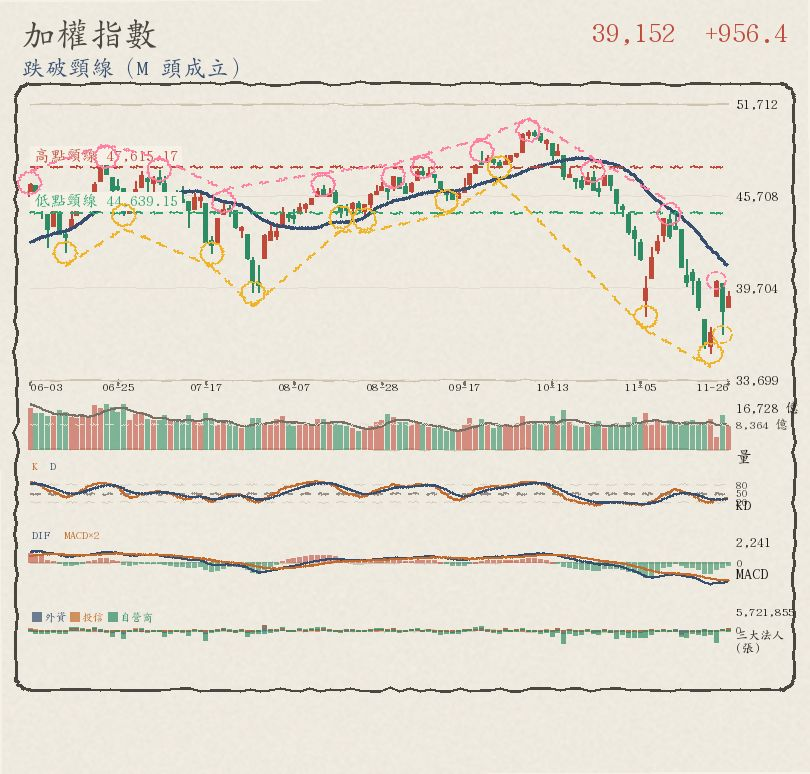
圖說：加權指數日 K（與個股圖相同標記）：黃圈＝轉折低點、粉圈＝轉折高點、虛線小圈＝還沒確認的轉折、藍線＝月線 MA20、水平虛線＝高點／低點頸線。最後一根是資料日當天。
本區塊為公開資料的技術面觀察，不構成投資建議，
不報牌、不預測、不下買賣決策。成交金額為集中市場總成交金額（含 ETF／權證），
與頁首摘要的「上市個股成交金額」口徑不同。標籤是統計，不是評分、也不是推薦。
上市 vs 上櫃（同期快篩）
加權 +2.50% vs 櫃買 +5.03%（同向） → 同向
（兩個市場分開寫，不合併成一個數字；櫃買為 TPEX 公開資料）
櫃買歷史：TPEX 逐日回補 130 根；來源：櫃買中心 www/zh-tw/indexInfo/sectinx（逐日，官方；OpenAPI tpex_index 只回當月）
（TPEX OpenAPI 只回當月，故逐日回補；歷史不足就不算該條均線並標「資料不足」，不用錯數字）
近 20 個交易日大盤狀態回溯（最新在上）（點開看逐日主狀態／量比／量價象限）
用同一支程式回算最近 20 個交易日（主狀態 S1~S8 與量比 20 皆為當日收盤當時的判定，
不是事後調整）；量比 20 未公布的日子寫「—」。
好條件最多的（前 10）
不好條件最多的（前 10）
好條件（7 項）：站上月線、月線向上、底底高、頭頭高、突破頸線、攻擊量（量增＋上漲）、守住今日高檔（距今日高點 1% 內）。
不好條件（7 項）：跌破前低、今日下跌、相對大盤弱、在月線之下、貼近今日低點（1% 內）、跌破昨日低點、月線下彎。
兩邊都是同一組日線資料＋盤中即時價算出來的「符合項目數」，只是把方向相反的條件分開數；
條件數不是評分或推薦，不構成投資建議。
盤中爆量（估量比 ≥ 1.5）（14 上市 11／上櫃 3）
今日疲弱（跌幅前 10）（10 上市 6／上櫃 4）
逐檔（70 檔，依盤中成交金額排序）
台積電 2330 上市
2175 +30.0（+1.40%）
區間或轉弱 盤中成交值 419.32 億・全榜第 1 名（上市第 1 名）・相對大盤 +0.97
好條件 0/7：無
不好條件 2/7：在月線之下、月線下彎
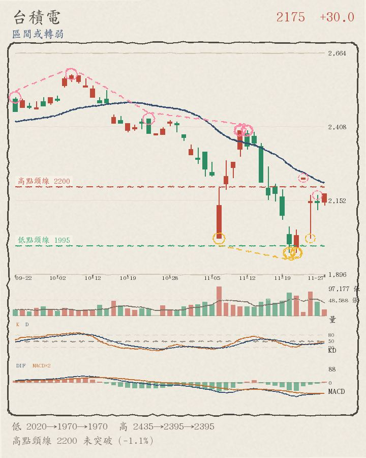
12:31 盤中 2175（+1.40%），比加權指數強 0.97 個百分點、跌破月線 2222.5，離高點頸線 2200 還差 1.1%，轉折還沒走出明顯方向。
- 月線位置：現價 2175 在月線 2222.5 之下（-2.1%）；5 日線 2111 也在月線之下（短均在下）；月線向下
- 量能：以已過交易時間推估，今天成交量約是 20 日均量的 0.56 倍（量縮），比 20 日均量少很多；上漲但量縮，量價背離
- 關鍵價位：高點頸線 2200 還沒突破，差 1.1%；前一交易日高點 2170（高於 0.2%）；今天盤中高點 2175（高於 0.0%）；今天盤中低點 2135（高於 1.9%）
- 轉折結構：低點 2020、1970、1970 與高點 2435、2395、2395 都沒有明顯遞增，屬於區間震盪或轉弱；還沒確認的轉折低點 11-23 1970、11-25 2020；還沒確認的轉折高點 11-24 2230、11-26 2170（圖上虛線小圈）
量縮
↑ 回上方清單
聯發科 2454 上市
3670 -35.0（-0.94%）
區間或轉弱 盤中成交值 235.14 億・全榜第 2 名（上市第 2 名）・相對大盤 -1.37
好條件 0/7：無
不好條件 4/7：今日下跌、相對大盤弱、在月線之下、月線下彎
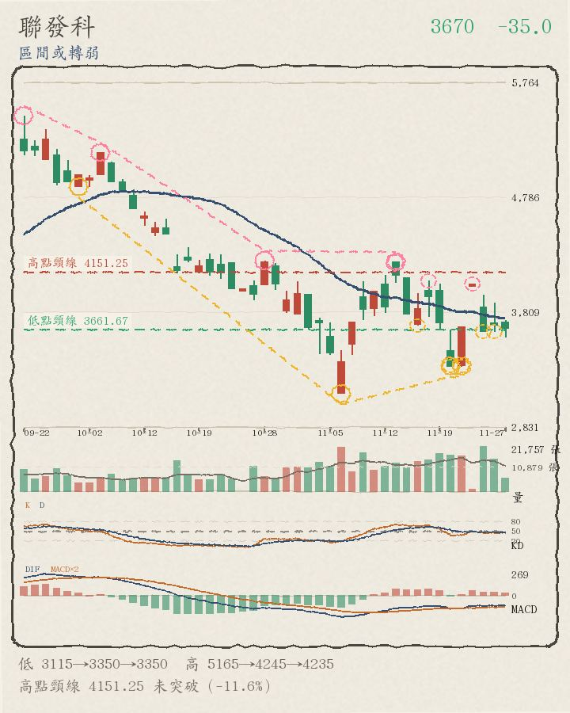
12:31 盤中 3670（-0.94%），比加權指數弱 1.37 個百分點、跌破月線 3768.5，離高點頸線 4151.25 還差 11.6%，轉折還沒走出明顯方向。
- 月線位置：現價 3670 在月線 3768.5 之下（-2.6%）；5 日線 3687 也在月線之下（短均在下）；月線向下
- 量能：以已過交易時間推估，今天成交量約是 20 日均量的 0.61 倍（量縮），比 20 日均量少很多
- 關鍵價位：高點頸線 4151.25 還沒突破，差 11.6%；前一交易日高點 3885（低於 5.5%）；今天盤中高點 3740（低於 1.9%）；今天盤中低點 3595（高於 2.1%）
- 轉折結構：低點 3115、3350、3350 與高點 5165、4245、4235 都沒有明顯遞增，屬於區間震盪或轉弱；還沒確認的轉折低點 11-25 3645、11-26 3645；還沒確認的轉折高點 11-18 4075、11-24 4050（圖上虛線小圈）
量縮
↑ 回上方清單
穩懋 3105 上櫃
449 +4.5（+1.01%）
區間或轉弱 盤中成交值 208.13 億・全榜第 3 名（上櫃第 1 名）・相對大盤 +0.58
好條件 1/7：攻擊量（量增＋上漲）
不好條件 2/7：在月線之下、月線下彎
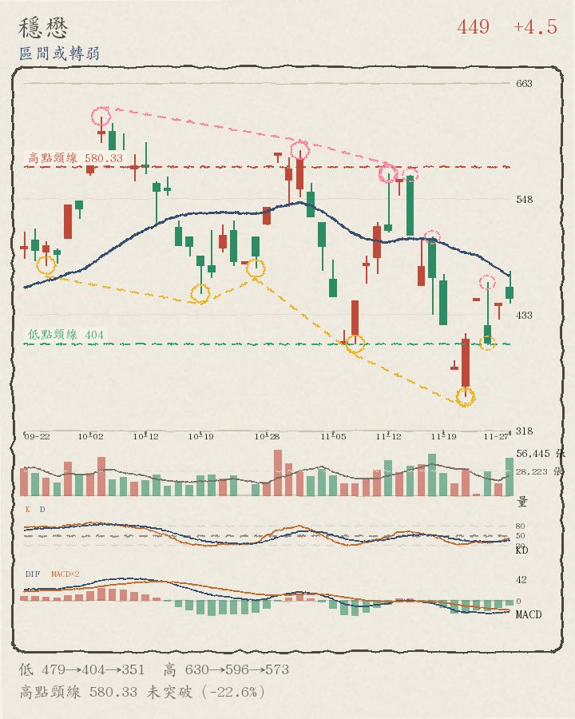
12:31 盤中 449（+1.01%），比加權指數強 0.58 個百分點、跌破月線 478.225，離高點頸線 580.33 還差 22.6%，轉折還沒走出明顯方向。
- 月線位置：現價 449 在月線 478.225 之下（-6.1%）；5 日線 417.5 也在月線之下（短均在下）；月線向下
- 量能：以已過交易時間推估，今天成交量約是 20 日均量的 2.02 倍（爆量），比 20 日均量大不少；上漲又量增，量價配合
- 關鍵價位：高點頸線 580.33 還沒突破，差 22.6%；前一交易日高點 444.5（高於 1.0%）；今天盤中高點 476.5（低於 5.8%）；今天盤中低點 444（高於 1.1%）
- 轉折結構：低點 479、403.5、351 與高點 630、596、573 都沒有明顯遞增，屬於區間震盪或轉弱；還沒確認的轉折低點 11-23 351、11-25 404.5；還沒確認的轉折高點 11-18 510、11-25 465（圖上虛線小圈）
欣興 3037 上市
650 +7.0（+1.09%）
區間或轉弱 盤中成交值 163.13 億・全榜第 4 名（上市第 3 名）・相對大盤 +0.66
好條件 1/7：攻擊量（量增＋上漲）
不好條件 2/7：在月線之下、月線下彎
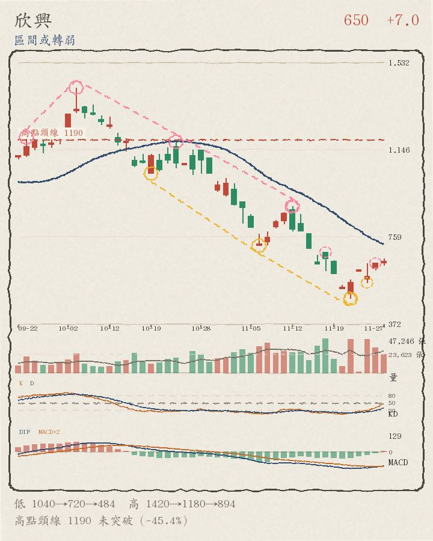
12:31 盤中 650（+1.09%），比加權指數強 0.66 個百分點、跌破月線 743.35，離高點頸線 1190 還差 45.4%，轉折還沒走出明顯方向。
- 月線位置：現價 650 在月線 743.35 之下（-12.6%）；5 日線 587.2 也在月線之下（短均在下）；月線向下
- 量能：以已過交易時間推估，今天成交量約是 20 日均量的 1.16 倍（量增），比 20 日均量大不少；上漲又量增，量價配合
- 關鍵價位：高點頸線 1190 還沒突破，差 45.4%；前一交易日高點 643（高於 1.1%）；今天盤中高點 661（低於 1.7%）；今天盤中低點 631（高於 3.0%）
- 轉折結構：低點 1040、720、484.5 與高點 1420、1180、894 都沒有明顯遞增，屬於區間震盪或轉弱；還沒確認的轉折低點 11-23 484.5、11-25 555；還沒確認的轉折高點 11-18 691、11-26 643（圖上虛線小圈）
量增
↑ 回上方清單
南電 8046 上市
711 -20.0（-2.74%）
區間或轉弱 盤中成交值 129.02 億・全榜第 5 名（上市第 4 名）・相對大盤 -3.17
好條件 0/7：無
不好條件 4/7：今日下跌、相對大盤弱、在月線之下、月線下彎
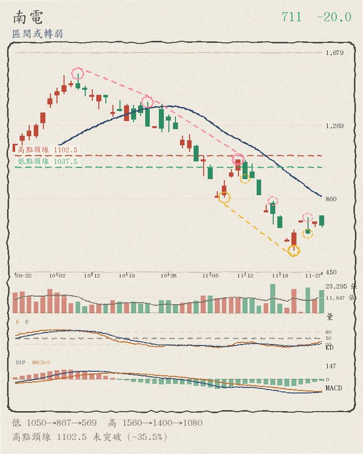
12:31 盤中 711（-2.74%），比加權指數弱 3.17 個百分點、跌破月線 895.8，離高點頸線 1102.5 還差 35.5%，轉折還沒走出明顯方向。
- 月線位置：現價 711 在月線 895.8 之下（-20.6%）；5 日線 686.4 也在月線之下（短均在下）；月線向下
- 量能：以已過交易時間推估，今天成交量約是 20 日均量的 2.12 倍（爆量），比 20 日均量大不少；下跌卻量增，量價背離
- 關鍵價位：高點頸線 1102.5 還沒突破，差 35.5%；前一交易日高點 731（低於 2.7%）；今天盤中高點 766（低於 7.2%）；今天盤中低點 700（高於 1.6%）
- 轉折結構：低點 1050、867、569 與高點 1560、1400、1080 都沒有明顯遞增，屬於區間震盪或轉弱；還沒確認的轉折低點 11-23 569、11-25 664；還沒確認的轉折高點 11-18 846、11-25 755（圖上虛線小圈）
台光電 2383 上市
3630 -30.0（-0.82%）
區間或轉弱 盤中成交值 127.88 億・全榜第 6 名（上市第 5 名）・相對大盤 -1.25
好條件 0/7：無
不好條件 4/7：今日下跌、相對大盤弱、在月線之下、月線下彎
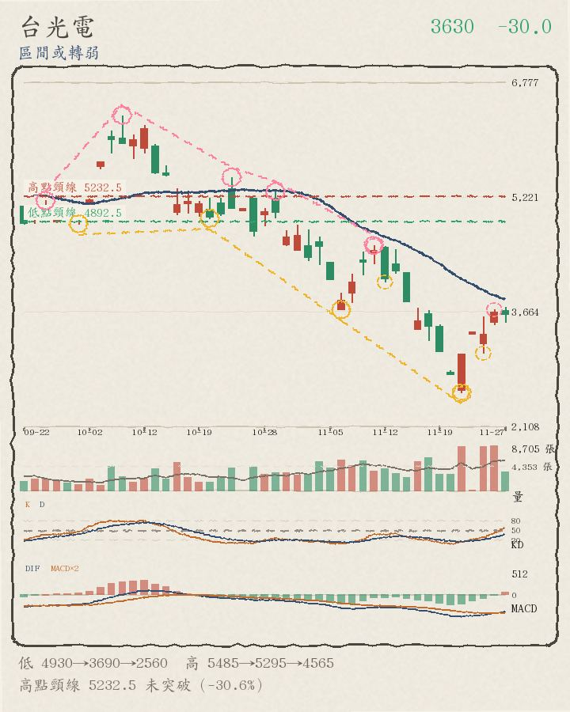
12:31 盤中 3630（-0.82%），比加權指數弱 1.25 個百分點、跌破月線 3886.75，離高點頸線 5232.5 還差 30.6%，轉折還沒走出明顯方向。
- 月線位置：現價 3630 在月線 3886.75 之下（-6.6%）；5 日線 3262 也在月線之下（短均在下）；月線向下
- 量能：以已過交易時間推估，今天成交量約是 20 日均量的 1.02 倍（量平），跟 20 日均量差不多
- 關鍵價位：高點頸線 5232.5 還沒突破，差 30.6%；前一交易日高點 3690（低於 1.6%）；今天盤中高點 3720（低於 2.4%）；今天盤中低點 3520（高於 3.1%）
- 轉折結構：低點 4930、3690、2560 與高點 5485、5295、4565 都沒有明顯遞增，屬於區間震盪或轉弱；還沒確認的轉折低點 11-23 2560、11-25 3100；還沒確認的轉折高點 11-11 4565、11-26 3690（圖上虛線小圈）
量平
↑ 回上方清單
南亞 1303 上市
244 +0.0（+0.00%）
區間或轉弱 盤中成交值 124.19 億・全榜第 7 名（上市第 6 名）・相對大盤 -0.43
好條件 0/7：無
不好條件 3/7：相對大盤弱、在月線之下、月線下彎
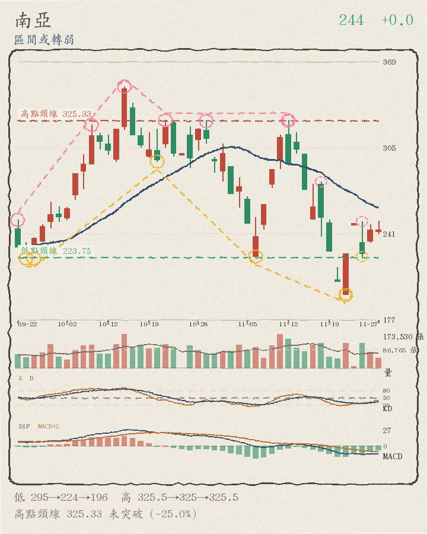
12:31 盤中 244（+0.00%），比加權指數弱 0.43 個百分點、跌破月線 263.225，離高點頸線 325.33 還差 25.0%，轉折還沒走出明顯方向。
- 月線位置：現價 244 在月線 263.225 之下（-7.3%）；5 日線 230.4 也在月線之下（短均在下）；月線向下
- 量能：以已過交易時間推估，今天成交量約是 20 日均量的 0.68 倍（量縮），比 20 日均量少很多
- 關鍵價位：高點頸線 325.33 還沒突破，差 25.0%；前一交易日高點 248（低於 1.6%）；今天盤中高點 251（低於 2.8%）；今天盤中低點 241（高於 1.2%）
- 轉折結構：低點 295、224.5、196 與高點 325.5、325、325.5 都沒有明顯遞增，屬於區間震盪或轉弱；還沒確認的轉折低點 11-23 196、11-25 224.5；還沒確認的轉折高點 11-18 280、11-25 250.5（圖上虛線小圈）
量縮
↑ 回上方清單
國巨* 2327 上市
343 +3.5（+1.03%）
區間或轉弱 盤中成交值 110.75 億・全榜第 8 名（上市第 7 名）・相對大盤 +0.60
好條件 1/7：突破頸線
不好條件 2/7：在月線之下、月線下彎
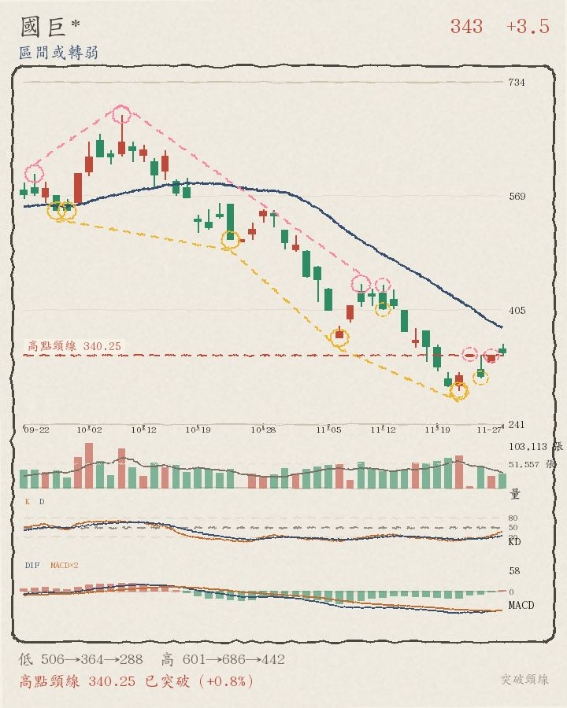
12:31 盤中 343（+1.03%），比加權指數強 0.60 個百分點、跌破月線 387.8，已突破高點頸線 340.25，轉折還沒走出明顯方向。
- 月線位置：現價 343 在月線 387.8 之下（-11.6%）；5 日線 319.1 也在月線之下（短均在下）；月線向下
- 量能：以已過交易時間推估，今天成交量約是 20 日均量的 0.92 倍（量平），比 20 日均量少一些
- 關鍵價位：高點頸線 340.25 已站上；前一交易日高點 339.5（高於 1.0%）；今天盤中高點 356（低於 3.7%）；今天盤中低點 339（高於 1.2%）
- 轉折結構：低點 506、364.5、288.5 與高點 601、686、442 都沒有明顯遞增，屬於區間震盪或轉弱；還沒確認的轉折低點 11-23 288.5、11-25 307；還沒確認的轉折高點 11-24 341、11-26 339.5（圖上虛線小圈）
台達電 2308 上市
1120 +0.0（+0.00%）
區間或轉弱 盤中成交值 108.07 億・全榜第 9 名（上市第 8 名）・相對大盤 -0.43
好條件 1/7：守住今日高檔（距今日高點 1% 內）
不好條件 3/7：相對大盤弱、在月線之下、月線下彎
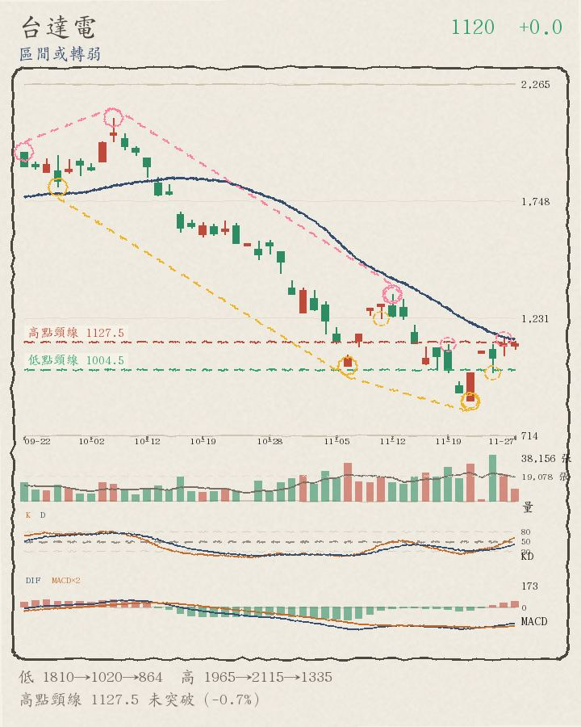
12:31 盤中 1120（+0.00%），比加權指數弱 0.43 個百分點、跌破月線 1148，離高點頸線 1127.5 還差 0.7%，轉折還沒走出明顯方向。
- 月線位置：現價 1120 在月線 1148 之下（-2.4%）；5 日線 1030 也在月線之下（短均在下）；月線向下
- 量能：以已過交易時間推估，今天成交量約是 20 日均量的 0.61 倍（量縮），比 20 日均量少很多
- 關鍵價位：高點頸線 1127.5 還沒突破，差 0.7%；前一交易日高點 1140（低於 1.8%）；今天盤中高點 1130（低於 0.9%）；今天盤中低點 1095（高於 2.3%）
- 轉折結構：低點 1810、1020、864 與高點 1965、2115、1335 都沒有明顯遞增，屬於區間震盪或轉弱；還沒確認的轉折低點 11-23 864、11-25 989；還沒確認的轉折高點 11-19 1115、11-26 1140（圖上虛線小圈）
量縮
↑ 回上方清單
奇鋐 3017 上市
2855 +60.0（+2.15%）
區間或轉弱 盤中成交值 105.81 億・全榜第 10 名（上市第 9 名）・相對大盤 +1.72
好條件 3/7：站上月線、突破頸線、攻擊量（量增＋上漲）
不好條件 1/7：月線下彎
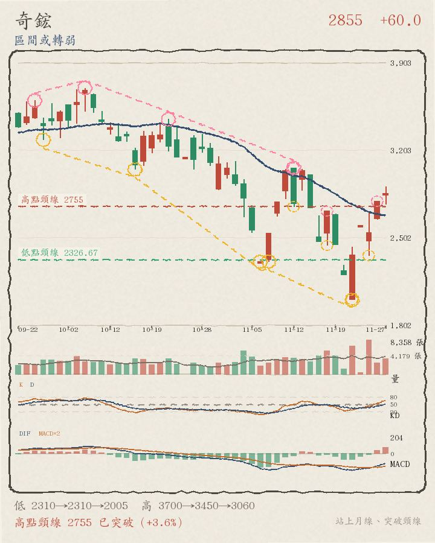
12:31 盤中 2855（+2.15%），比加權指數強 1.72 個百分點、站上月線 2692.5，已突破高點頸線 2755，轉折還沒走出明顯方向。
- 月線位置：現價 2855 在月線 2692.5 之上（+6.0%）；5 日線 2502 也在月線之下（短均在下）；月線向下
- 量能：以已過交易時間推估，今天成交量約是 20 日均量的 1.30 倍（量增），比 20 日均量大不少；上漲又量增，量價配合
- 關鍵價位：高點頸線 2755 已站上；前一交易日高點 2795（高於 2.1%）；今天盤中高點 2910（低於 1.9%）；今天盤中低點 2770（高於 3.1%）
- 轉折結構：低點 2310、2310、2005 與高點 3700、3450、3060 都沒有明顯遞增，屬於區間震盪或轉弱；還沒確認的轉折低點 11-23 2005、11-25 2360；還沒確認的轉折高點 11-18 2715、11-26 2795（圖上虛線小圈）
緯穎 6669 上市
1675 +105.0（+6.69%）
區間或轉弱 盤中成交值 100.99 億・全榜第 11 名（上市第 10 名）・相對大盤 +6.26
好條件 3/7：站上月線、突破頸線、攻擊量（量增＋上漲）
不好條件 1/7：月線下彎
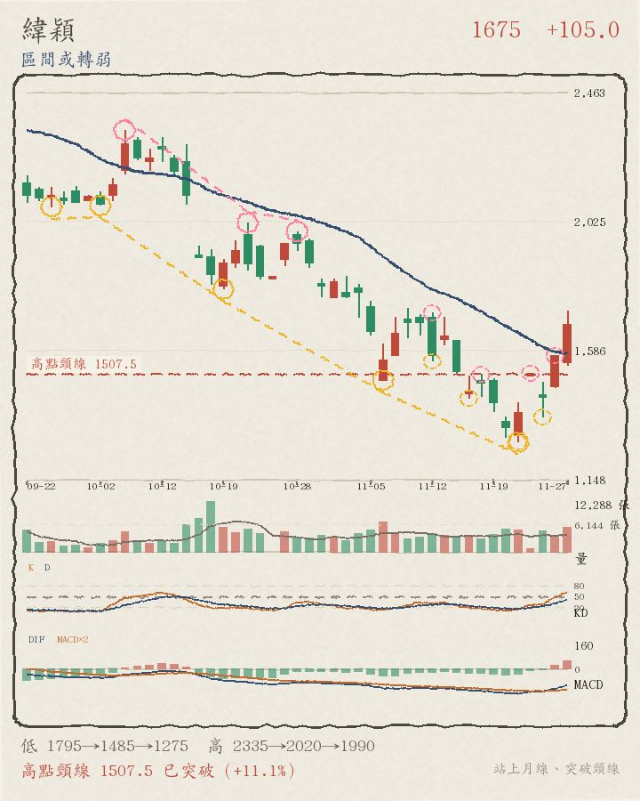
12:31 盤中 1675（+6.69%），比加權指數強 6.26 個百分點、站上月線 1583，已突破高點頸線 1507.5，轉折還沒走出明顯方向。
- 月線位置：現價 1675 在月線 1583 之上（+5.8%）；5 日線 1442 也在月線之下（短均在下）；月線向下
- 量能：以已過交易時間推估，今天成交量約是 20 日均量的 1.90 倍（爆量），比 20 日均量大不少；上漲又量增，量價配合
- 關鍵價位：高點頸線 1507.5 已站上；前一交易日高點 1570（高於 6.7%）；今天盤中高點 1720（低於 2.6%）；今天盤中低點 1535（高於 9.1%）
- 轉折結構：低點 1795、1485、1275 與高點 2335、2020、1990 都沒有明顯遞增，屬於區間震盪或轉弱；還沒確認的轉折低點 11-23 1275、11-25 1360；還沒確認的轉折高點 11-24 1510、11-26 1570（圖上虛線小圈）
群聯 8299 上櫃
1625 -5.0（-0.31%）
區間或轉弱 盤中成交值 96.18 億・全榜第 12 名（上櫃第 2 名）・相對大盤 -0.74
好條件 2/7：站上月線、突破頸線
不好條件 3/7：今日下跌、相對大盤弱、月線下彎
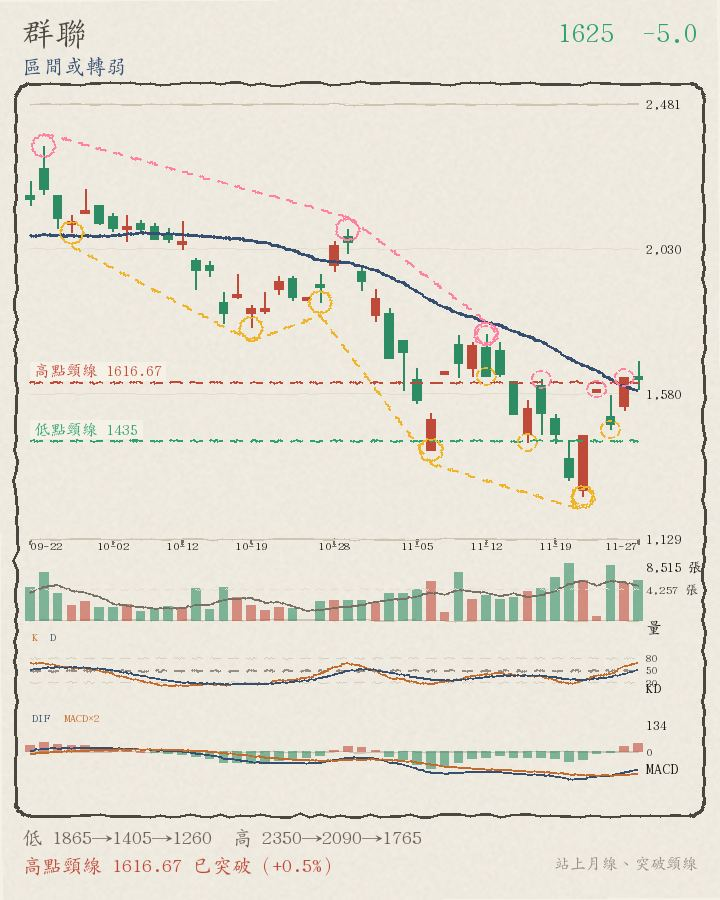
12:31 盤中 1625（-0.31%），比加權指數弱 0.74 個百分點、站上月線 1605，已突破高點頸線 1616.67，轉折還沒走出明顯方向。
- 月線位置：現價 1625 在月線 1605 之上（+1.2%）；5 日線 1496 也在月線之下（短均在下）；月線向下
- 量能：以已過交易時間推估，今天成交量約是 20 日均量的 1.75 倍（爆量），比 20 日均量大不少；下跌卻量增，量價背離
- 關鍵價位：高點頸線 1616.67 已站上；前一交易日高點 1630（低於 0.3%）；今天盤中高點 1680（低於 3.3%）；今天盤中低點 1595（高於 1.9%）
- 轉折結構：低點 1865、1405、1260 與高點 2350、2090、1765 都沒有明顯遞增，屬於區間震盪或轉弱；還沒確認的轉折低點 11-23 1260、11-25 1470；還沒確認的轉折高點 11-24 1595、11-26 1630（圖上虛線小圈）
景碩 3189 上市
526 -4.0（-0.75%）
區間或轉弱 盤中成交值 94.13 億・全榜第 13 名（上市第 11 名）・相對大盤 -1.18
好條件 0/7：無
不好條件 5/7：今日下跌、相對大盤弱、在月線之下、貼近今日低點（1% 內）、月線下彎
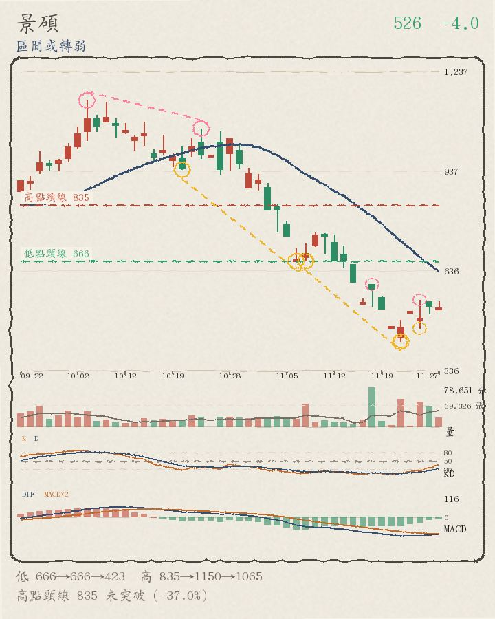
12:31 盤中 526（-0.75%），比加權指數弱 1.18 個百分點、跌破月線 656.325，離高點頸線 835 還差 37.0%，轉折還沒走出明顯方向。
- 月線位置：現價 526 在月線 656.325 之下（-19.9%）；5 日線 495.3 也在月線之下（短均在下）；月線向下
- 量能：以已過交易時間推估，今天成交量約是 20 日均量的 1.10 倍（量增），比 20 日均量大一些；下跌卻量增，量價背離
- 關鍵價位：高點頸線 835 還沒突破，差 37.0%；前一交易日高點 544（低於 3.3%）；今天盤中高點 543（低於 3.1%）；今天盤中低點 522（高於 0.8%）
- 轉折結構：低點 666、666、423 與高點 835、1150、1065 都沒有明顯遞增，屬於區間震盪或轉弱；還沒確認的轉折低點 11-23 423、11-25 463；還沒確認的轉折高點 11-18 596、11-25 549（圖上虛線小圈）
量增
↑ 回上方清單
大立光 3008 上市
4200 -225.0（-5.08%）
區間或轉弱 盤中成交值 87.7 億・全榜第 14 名（上市第 12 名）・相對大盤 -5.51
好條件 0/7：無
不好條件 5/7：今日下跌、相對大盤弱、在月線之下、跌破昨日低點、月線下彎
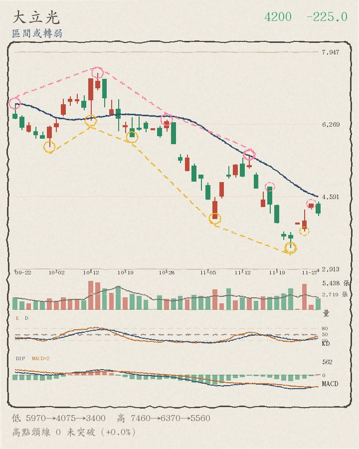
12:31 盤中 4200（-5.08%），比加權指數弱 5.51 個百分點、跌破月線 4648.25，轉折還沒走出明顯方向。
- 月線位置：現價 4200 在月線 4648.25 之下（-9.6%）；5 日線 3944 也在月線之下（短均在下）；月線向下
- 量能：以已過交易時間推估，今天成交量約是 20 日均量的 1.08 倍（量平），比 20 日均量大一些
- 關鍵價位：前一交易日高點 4425（低於 5.1%）；今天盤中高點 4465（低於 5.9%）；今天盤中低點 4145（高於 1.3%）
- 轉折結構：低點 5970、4075、3400 與高點 7460、6370、5560 都沒有明顯遞增，屬於區間震盪或轉弱；還沒確認的轉折低點 11-23 3400、11-25 3790；還沒確認的轉折高點 11-18 4820、11-26 4425（圖上虛線小圈）
量平
↑ 回上方清單
華通 2313 上市
184.5 +16.5（+9.82%）
區間或轉弱 盤中成交值 86.57 億・全榜第 15 名（上市第 13 名）・相對大盤 +9.39
好條件 2/7：站上月線、攻擊量（量增＋上漲）
不好條件 1/7：月線下彎
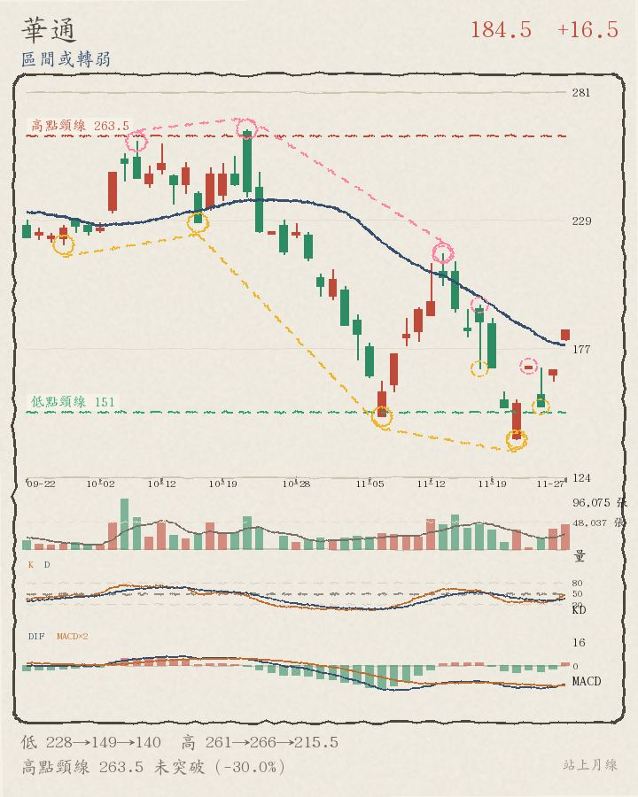
12:31 盤中 184.5（+9.82%），比加權指數強 9.39 個百分點、站上月線 179.125，離高點頸線 263.5 還差 30.0%，轉折還沒走出明顯方向。
- 月線位置：現價 184.5 在月線 179.125 之上（+3.0%）；5 日線 159.5 也在月線之下（短均在下）；月線向下
- 量能：以已過交易時間推估，今天成交量約是 20 日均量的 2.01 倍（爆量），比 20 日均量大不少；上漲又量增，量價配合
- 關鍵價位：高點頸線 263.5 還沒突破，差 30.0%；前一交易日高點 168（高於 9.8%）；今天盤中高點 184.5（高於 0.0%）；今天盤中低點 180（高於 2.5%）
- 轉折結構：低點 228、149、139.5 與高點 261、266、215.5 都沒有明顯遞增，屬於區間震盪或轉弱；還沒確認的轉折低點 11-23 139.5、11-25 153；還沒確認的轉折高點 11-18 194.5、11-24 169.5（圖上虛線小圈）
台燿 6274 上櫃
761 -33.0（-4.16%）
區間或轉弱 盤中成交值 78.6 億・全榜第 16 名（上櫃第 3 名）・相對大盤 -4.59
好條件 0/7：無
不好條件 4/7：今日下跌、相對大盤弱、在月線之下、月線下彎
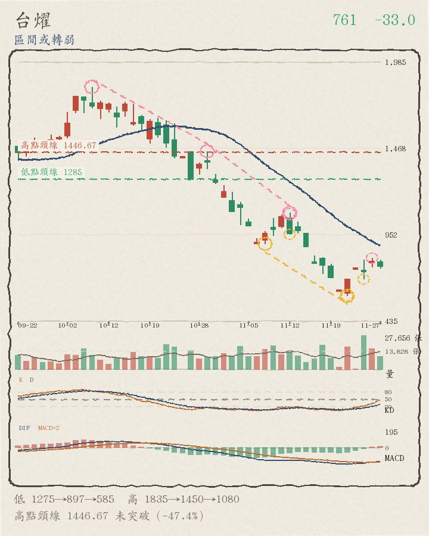
12:31 盤中 761（-4.16%），比加權指數弱 4.59 個百分點、跌破月線 912.3，離高點頸線 1446.67 還差 47.4%，轉折還沒走出明顯方向。
- 月線位置：現價 761 在月線 912.3 之下（-16.6%）；5 日線 718.8 也在月線之下（短均在下）；月線向下
- 量能：以已過交易時間推估，今天成交量約是 20 日均量的 1.07 倍（量平），比 20 日均量大一些
- 關鍵價位：高點頸線 1446.67 還沒突破，差 47.4%；前一交易日高點 812（低於 6.3%）；今天盤中高點 802（低於 5.1%）；今天盤中低點 752（高於 1.2%）
- 轉折結構：低點 1275、897、585 與高點 1835、1450、1080 都沒有明顯遞增，屬於區間震盪或轉弱；還沒確認的轉折低點 11-23 585、11-25 685；還沒確認的轉折高點 11-12 1080、11-26 812（圖上虛線小圈）
量平
↑ 回上方清單
南亞科 2408 上市
309 +3.0（+0.98%）
區間或轉弱 盤中成交值 77.45 億・全榜第 17 名（上市第 14 名）・相對大盤 +0.55
好條件 2/7：突破頸線、守住今日高檔（距今日高點 1% 內）
不好條件 2/7：在月線之下、月線下彎
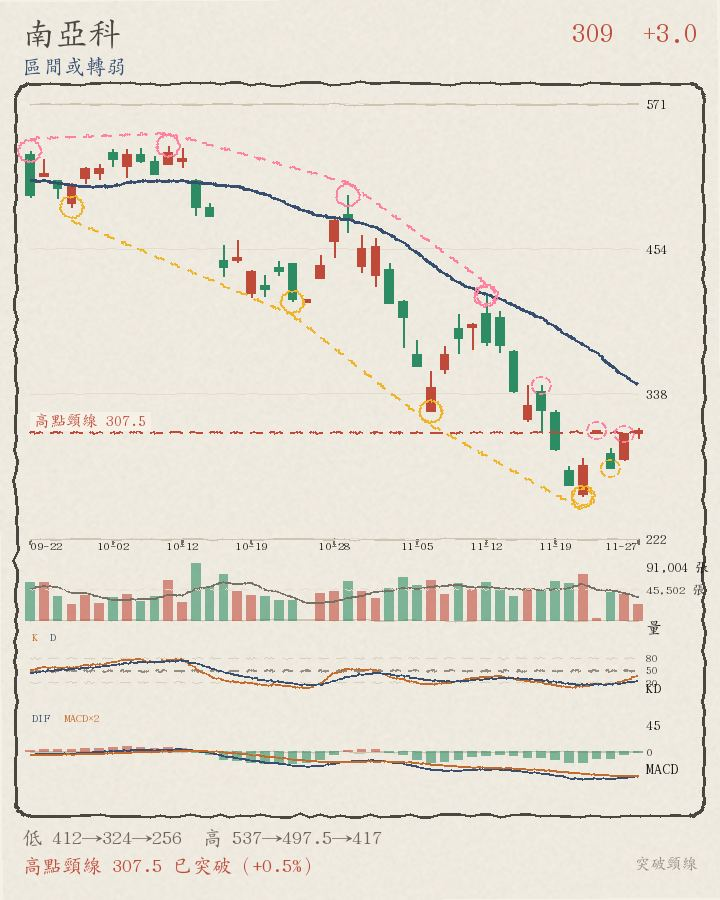
12:31 盤中 309（+0.98%），比加權指數強 0.55 個百分點、跌破月線 352.75，已突破高點頸線 307.5，轉折還沒走出明顯方向。
- 月線位置：現價 309 在月線 352.75 之下（-12.4%）；5 日線 287.8 也在月線之下（短均在下）；月線向下
- 量能：以已過交易時間推估，今天成交量約是 20 日均量的 0.63 倍（量縮），比 20 日均量少很多；上漲但量縮，量價背離
- 關鍵價位：高點頸線 307.5 已站上；前一交易日高點 306（高於 1.0%）；今天盤中高點 310.5（低於 0.5%）；今天盤中低點 302.5（高於 2.1%）
- 轉折結構：低點 412、324、255.5 與高點 537、497.5、417 都沒有明顯遞增，屬於區間震盪或轉弱；還沒確認的轉折低點 11-23 255.5、11-25 278.5；還沒確認的轉折高點 11-24 309、11-26 306（圖上虛線小圈）
金像電 2368 上市
942 -53.0（-5.33%）
區間或轉弱 盤中成交值 73.65 億・全榜第 18 名（上市第 15 名）・相對大盤 -5.76
好條件 1/7：站上月線
不好條件 4/7：今日下跌、相對大盤弱、貼近今日低點（1% 內）、月線下彎
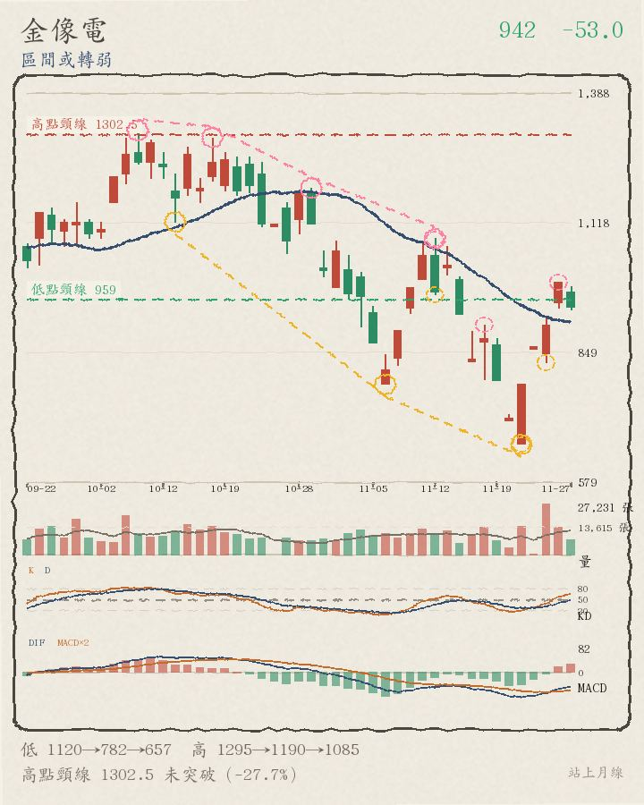
12:31 盤中 942（-5.33%），比加權指數弱 5.76 個百分點、站上月線 915.45，離高點頸線 1302.5 還差 27.7%，轉折還沒走出明顯方向。
- 月線位置：現價 942 在月線 915.45 之上（+2.9%）；5 日線 850.6 也在月線之下（短均在下）；月線向下
- 量能：以已過交易時間推估，今天成交量約是 20 日均量的 0.95 倍（量平），跟 20 日均量差不多
- 關鍵價位：高點頸線 1302.5 還沒突破，差 27.7%；前一交易日高點 995（低於 5.3%）；今天盤中高點 985（低於 4.4%）；今天盤中低點 937（高於 0.5%）
- 轉折結構：低點 1120、782、657 與高點 1295、1190、1085 都沒有明顯遞增，屬於區間震盪或轉弱；還沒確認的轉折低點 11-23 657、11-25 827；還沒確認的轉折高點 11-18 906、11-26 995（圖上虛線小圈）
世芯-KY 3661 上市
3630 -105.0（-2.81%）
區間或轉弱 盤中成交值 67.81 億・全榜第 19 名（上市第 16 名）・相對大盤 -3.24
好條件 2/7：站上月線、月線向上
不好條件 3/7：今日下跌、相對大盤弱、跌破昨日低點
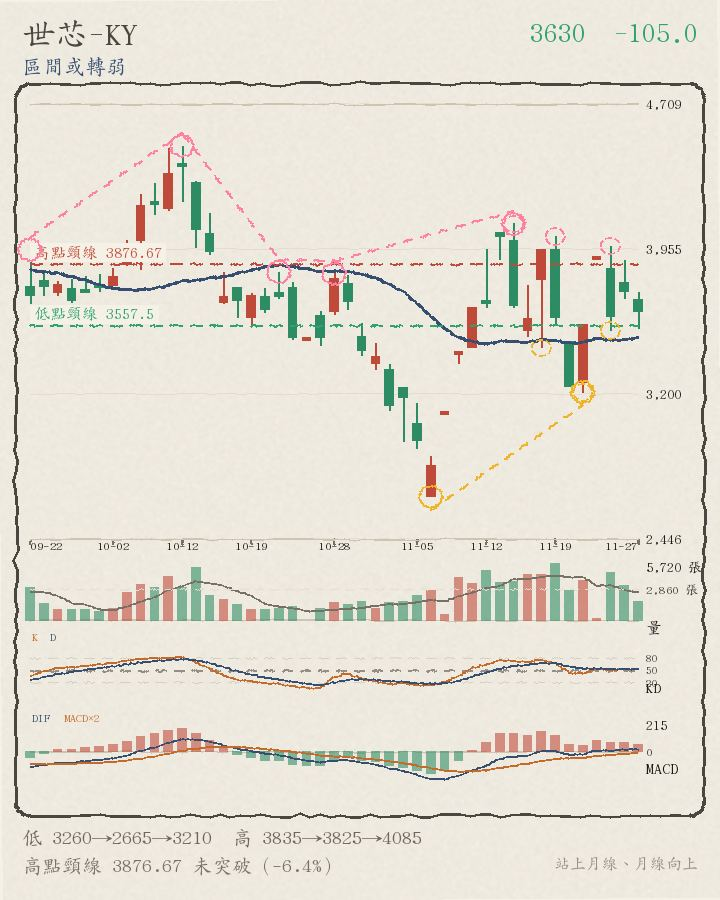
12:31 盤中 3630（-2.81%），比加權指數弱 3.24 個百分點、站上月線 3483.25，離高點頸線 3876.67 還差 6.4%，轉折還沒走出明顯方向。
- 月線位置：現價 3630 在月線 3483.25 之上（+4.2%）；5 日線 3611 也在月線之上（短均在上）；月線向上
- 量能：以已過交易時間推估，今天成交量約是 20 日均量的 0.78 倍（量平），比 20 日均量少很多
- 關鍵價位：高點頸線 3876.67 還沒突破，差 6.4%；前一交易日高點 3895（低於 6.8%）；今天盤中高點 3730（低於 2.7%）；今天盤中低點 3540（高於 2.5%）
- 轉折結構：低點 3260、2665、3210 與高點 3835、3825、4085 都沒有明顯遞增，屬於區間震盪或轉弱；還沒確認的轉折低點 11-23 3210、11-25 3530；還沒確認的轉折高點 11-19 4020、11-25 3970（圖上虛線小圈）
日月光投控 3711 上市
521 +10.0（+1.96%）
區間或轉弱 盤中成交值 66.03 億・全榜第 20 名（上市第 17 名）・相對大盤 +1.53
好條件 1/7：守住今日高檔（距今日高點 1% 內）
不好條件 2/7：在月線之下、月線下彎
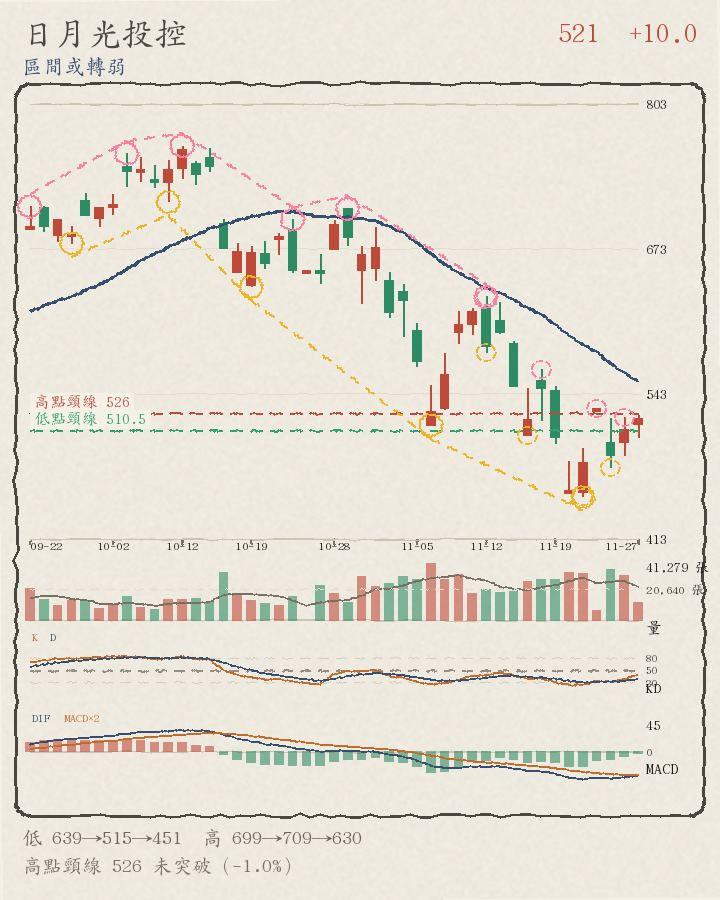
12:31 盤中 521（+1.96%），比加權指數強 1.53 個百分點、跌破月線 562.05，離高點頸線 526 還差 1.0%，轉折還沒走出明顯方向。
- 月線位置：現價 521 在月線 562.05 之下（-7.3%）；5 日線 493.6 也在月線之下（短均在下）；月線向下
- 量能：以已過交易時間推估，今天成交量約是 20 日均量的 0.60 倍（量縮），比 20 日均量少很多；上漲但量縮，量價背離
- 關鍵價位：高點頸線 526 還沒突破，差 1.0%；前一交易日高點 522（低於 0.2%）；今天盤中高點 524（低於 0.6%）；今天盤中低點 504（高於 3.4%）
- 轉折結構：低點 639、515、451 與高點 699、709、630 都沒有明顯遞增，屬於區間震盪或轉弱；還沒確認的轉折低點 11-23 451、11-25 477；還沒確認的轉折高點 11-24 530、11-26 522（圖上虛線小圈）
量縮
↑ 回上方清單
智邦 2345 上市
1570 -50.0（-3.09%）
高點墊高、底部不穩 盤中成交值 64.56 億・全榜第 21 名（上市第 18 名）・相對大盤 -3.52
好條件 2/7：站上月線、頭頭高
不好條件 3/7：今日下跌、相對大盤弱、月線下彎
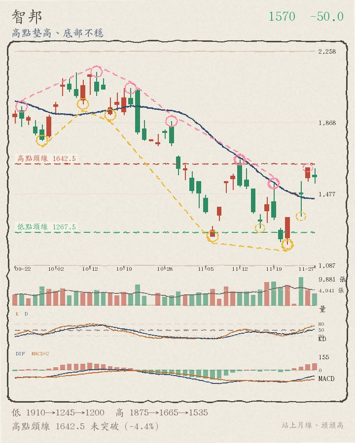
12:31 盤中 1570（-3.09%），比加權指數弱 3.52 個百分點、站上月線 1453.75，離高點頸線 1642.5 還差 4.4%，高點還在墊高（但底部沒同步墊高）。
- 月線位置：現價 1570 在月線 1453.75 之上（+8.0%）；5 日線 1432 也在月線之下（短均在下）；月線向下
- 量能：以已過交易時間推估，今天成交量約是 20 日均量的 1.04 倍（量平），跟 20 日均量差不多
- 關鍵價位：高點頸線 1642.5 還沒突破，差 4.4%；前一交易日高點 1620（低於 3.1%）；今天盤中高點 1615（低於 2.8%）；今天盤中低點 1535（高於 2.3%）
- 轉折結構：高點 1875、1665、1535 墊高（頭頭高），但低點 1910、1245、1200 沒有同步墊高；還沒確認的轉折低點 11-23 1200、11-25 1355；還沒確認的轉折高點 11-19 1535、11-26 1620（圖上虛線小圈）
台玻 1802 上市
57.1 -2.6（-4.36%）
區間或轉弱 盤中成交值 63.14 億・全榜第 22 名（上市第 19 名）・相對大盤 -4.79
好條件 0/7：無
不好條件 5/7：今日下跌、相對大盤弱、在月線之下、跌破昨日低點、月線下彎

12:31 盤中 57.1（-4.36%），比加權指數弱 4.79 個百分點、跌破月線 65.955，離高點頸線 69.8 還差 18.2%，轉折還沒走出明顯方向。
- 月線位置：現價 57.1 在月線 65.955 之下（-13.4%）；5 日線 58.9 也在月線之下（短均在下）；月線向下
- 量能：以已過交易時間推估，今天成交量約是 20 日均量的 0.75 倍（量平），比 20 日均量少很多
- 關鍵價位：高點頸線 69.8 還沒突破，差 18.2%；前一交易日高點 63.3（低於 9.8%）；今天盤中高點 60.7（低於 5.9%）；今天盤中低點 56.5（高於 1.1%）
- 轉折結構：低點 58.8、54.1、49.5 與高點 73.6、70、89.5 都沒有明顯遞增，屬於區間震盪或轉弱；還沒確認的轉折低點 11-23 49.5、11-26 57.3；還沒確認的轉折高點 11-13 89.5、11-25 69.6（圖上虛線小圈）
量平
↑ 回上方清單
健策 3653 上市
4860 +275.0（+6.00%）
區間或轉弱 盤中成交值 59.53 億・全榜第 23 名（上市第 20 名）・相對大盤 +5.57
好條件 1/7：突破頸線
不好條件 2/7：在月線之下、月線下彎
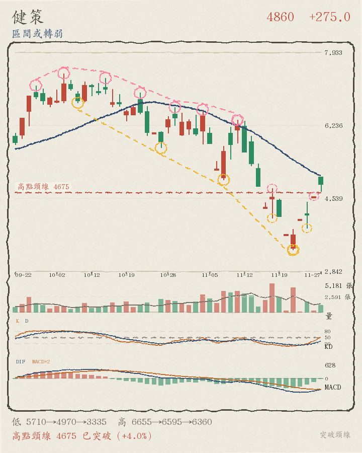
12:31 盤中 4860（+6.00%），比加權指數強 5.57 個百分點、跌破月線 5139，已突破高點頸線 4675，轉折還沒走出明顯方向。
- 月線位置：現價 4860 在月線 5139 之下（-5.4%）；5 日線 4039 也在月線之下（短均在下）；月線向下
- 量能：以已過交易時間推估，今天成交量約是 20 日均量的 0.65 倍（量縮），比 20 日均量少很多；上漲但量縮，量價背離
- 關鍵價位：高點頸線 4675 已站上；前一交易日高點 4585（高於 6.0%）；今天盤中高點 5040（低於 3.6%）；今天盤中低點 4700（高於 3.4%）
- 轉折結構：低點 5710、4970、3335 與高點 6655、6595、6360 都沒有明顯遞增，屬於區間震盪或轉弱；還沒確認的轉折低點 11-23 3335、11-25 3845；還沒確認的轉折高點 11-18 4765、11-26 4585（圖上虛線小圈）
聯電 2303 上市
88.2 -0.6（-0.68%）
區間或轉弱 盤中成交值 59.42 億・全榜第 24 名（上市第 21 名）・相對大盤 -1.11
好條件 0/7：無
不好條件 5/7：今日下跌、相對大盤弱、在月線之下、貼近今日低點（1% 內）、月線下彎
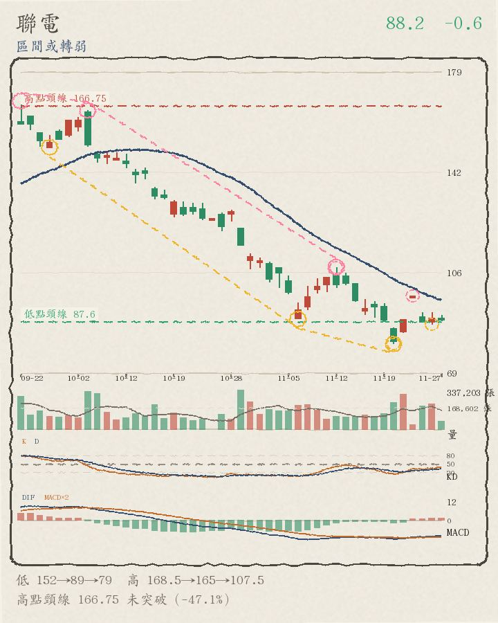
12:31 盤中 88.2（-0.68%），比加權指數弱 1.11 個百分點、跌破月線 96.74，離高點頸線 166.75 還差 47.1%，轉折還沒走出明顯方向。
- 月線位置：現價 88.2 在月線 96.74 之下（-8.8%）；5 日線 88.38 也在月線之下（短均在下）；月線向下
- 量能：以已過交易時間推估，今天成交量約是 20 日均量的 0.52 倍（量縮），比 20 日均量少很多
- 關鍵價位：高點頸線 166.75 還沒突破，差 47.1%；前一交易日高點 90.9（低於 3.0%）；今天盤中高點 90（低於 2.0%）；今天盤中低點 87.8（高於 0.5%）
- 轉折結構：低點 151.5、88.6、79.4 與高點 168.5、165、107.5 都沒有明顯遞增，屬於區間震盪或轉弱；還沒確認的轉折低點 11-20 79.4、11-26 86.6；還沒確認的轉折高點 11-12 107.5、11-24 97.1（圖上虛線小圈）
量縮
↑ 回上方清單
啟碁 6285 上市
201.5 +8.5（+4.40%）
區間或轉弱 盤中成交值 58.66 億・全榜第 25 名（上市第 22 名）・相對大盤 +3.97
好條件 2/7：站上月線、攻擊量（量增＋上漲）
不好條件 1/7：月線下彎
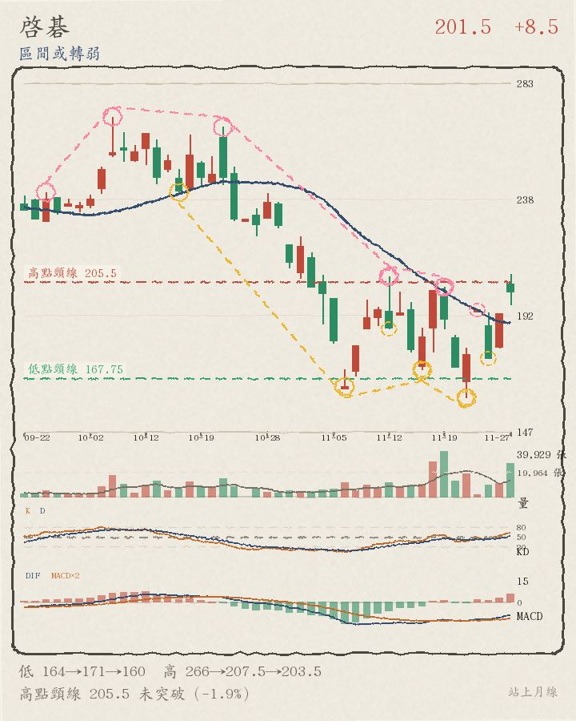
12:31 盤中 201.5（+4.40%），比加權指數強 3.97 個百分點、站上月線 189.975，離高點頸線 205.5 還差 1.9%，轉折還沒走出明顯方向。
- 月線位置：現價 201.5 在月線 189.975 之上（+6.1%）；5 日線 182.4 也在月線之下（短均在下）；月線向下
- 量能：以已過交易時間推估，今天成交量約是 20 日均量的 3.33 倍（爆量），比 20 日均量大不少；上漲又量增，量價配合
- 關鍵價位：高點頸線 205.5 還沒突破，差 1.9%；前一交易日高點 193（高於 4.4%）；今天盤中高點 208.5（低於 3.4%）；今天盤中低點 196.5（高於 2.5%）
- 轉折結構：低點 164.5、171、160 與高點 266、207.5、203.5 都沒有明顯遞增，屬於區間震盪或轉弱；還沒確認的轉折低點 11-23 160、11-25 175.5；還沒確認的轉折高點 11-19 203.5、11-24 194.5（圖上虛線小圈）
川湖 2059 上市
7055 -100.0（-1.40%）
區間或轉弱 盤中成交值 55.38 億・全榜第 26 名（上市第 23 名）・相對大盤 -1.83
好條件 0/7：無
不好條件 4/7：今日下跌、相對大盤弱、在月線之下、月線下彎
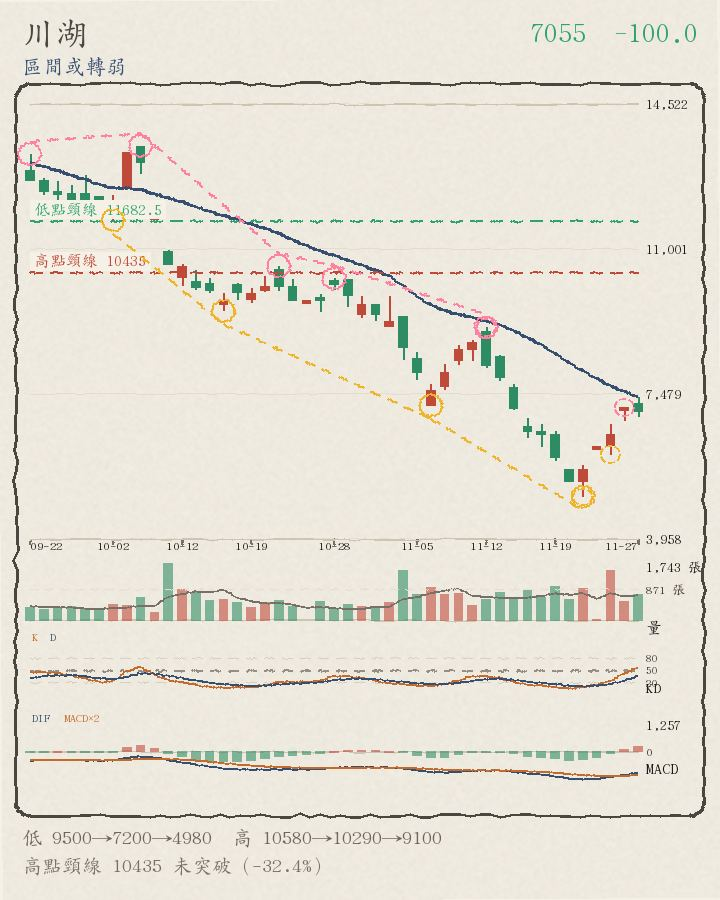
12:31 盤中 7055（-1.40%），比加權指數弱 1.83 個百分點、跌破月線 7541，離高點頸線 10435 還差 32.4%，轉折還沒走出明顯方向。
- 月線位置：現價 7055 在月線 7541 之下（-6.4%）；5 日線 6170 也在月線之下（短均在下）；月線向下
- 量能：以已過交易時間推估，今天成交量約是 20 日均量的 1.34 倍（量增），比 20 日均量大不少；下跌卻量增，量價背離
- 關鍵價位：高點頸線 10435 還沒突破，差 32.4%；前一交易日高點 7155（低於 1.4%）；今天盤中高點 7385（低於 4.5%）；今天盤中低點 6940（高於 1.7%）
- 轉折結構：低點 9500、7200、4980 與高點 10580、10290、9100 都沒有明顯遞增，屬於區間震盪或轉弱；還沒確認的轉折低點 11-23 4980、11-25 6015；還沒確認的轉折高點 11-12 9100、11-26 7155（圖上虛線小圈）
量增
↑ 回上方清單
貿聯-KY 3665 上市
1720 -70.0（-3.91%）
高點墊高、底部不穩 盤中成交值 51.46 億・全榜第 27 名（上市第 24 名）・相對大盤 -4.34
好條件 3/7：站上月線、頭頭高、突破頸線
不好條件 3/7：今日下跌、相對大盤弱、月線下彎

12:31 盤中 1720（-3.91%），比加權指數弱 4.34 個百分點、站上月線 1517.25，已突破高點頸線 1610，高點還在墊高（但底部沒同步墊高）。
- 月線位置：現價 1720 在月線 1517.25 之上（+13.4%）；5 日線 1544 也在月線之上（短均在上）；月線向下
- 量能：以已過交易時間推估，今天成交量約是 20 日均量的 0.96 倍（量平），跟 20 日均量差不多
- 關鍵價位：高點頸線 1610 已站上；前一交易日高點 1790（低於 3.9%）；今天盤中高點 1785（低於 3.6%）；今天盤中低點 1695（高於 1.5%）
- 轉折結構：高點 2685、2080、1630 墊高（頭頭高），但低點 1810、1295、1240 沒有同步墊高；還沒確認的轉折低點 11-23 1240、11-25 1540；還沒確認的轉折高點 11-19 1590、11-26 1790（圖上虛線小圈）
聯茂 6213 上市
414.5 -14.5（-3.38%）
區間或轉弱 盤中成交值 49.69 億・全榜第 28 名（上市第 25 名）・相對大盤 -3.81
好條件 0/7：無
不好條件 4/7：今日下跌、相對大盤弱、在月線之下、月線下彎
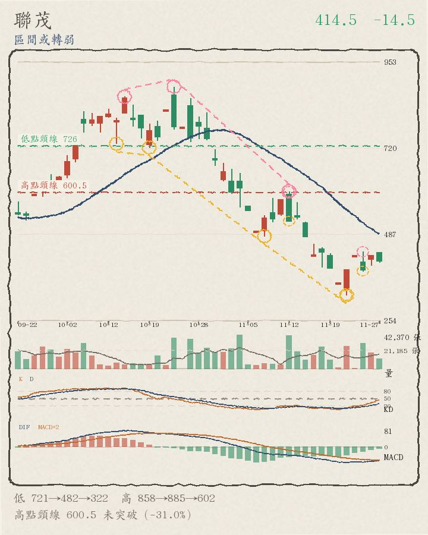
12:31 盤中 414.5（-3.38%），比加權指數弱 3.81 個百分點、跌破月線 501.85，離高點頸線 600.5 還差 31.0%，轉折還沒走出明顯方向。
- 月線位置：現價 414.5 在月線 501.85 之下（-17.4%）；5 日線 399.1 也在月線之下（短均在下）；月線向下
- 量能：以已過交易時間推估，今天成交量約是 20 日均量的 0.88 倍（量平），比 20 日均量少一些
- 關鍵價位：高點頸線 600.5 還沒突破，差 31.0%；前一交易日高點 429（低於 3.4%）；今天盤中高點 438.5（低於 5.5%）；今天盤中低點 410（高於 1.1%）
- 轉折結構：低點 721、481.5、321.5 與高點 858、885、602 都沒有明顯遞增，屬於區間震盪或轉弱；還沒確認的轉折低點 11-23 321.5、11-25 387；還沒確認的轉折高點 11-12 602、11-25 439（圖上虛線小圈）
量平
↑ 回上方清單
華邦電 2344 上市
105 +1.5（+1.45%）
區間或轉弱 盤中成交值 48.29 億・全榜第 29 名（上市第 26 名）・相對大盤 +1.02
好條件 2/7：突破頸線、守住今日高檔（距今日高點 1% 內）
不好條件 2/7：在月線之下、月線下彎
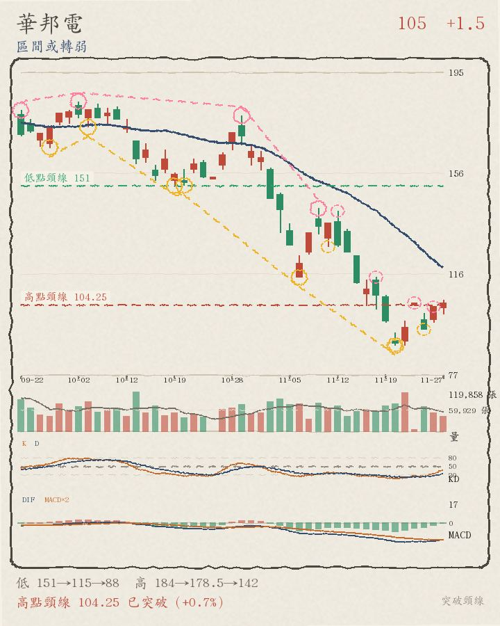
12:31 盤中 105（+1.45%），比加權指數強 1.02 個百分點、跌破月線 121.785，已突破高點頸線 104.25，轉折還沒走出明顯方向。
- 月線位置：現價 105 在月線 121.785 之下（-13.8%）；5 日線 97.54 也在月線之下（短均在下）；月線向下
- 量能：以已過交易時間推估，今天成交量約是 20 日均量的 0.84 倍（量平），比 20 日均量少很多；上漲但量縮，量價背離
- 關鍵價位：高點頸線 104.25 已站上；前一交易日高點 103.5（高於 1.4%）；今天盤中高點 106（低於 0.9%）；今天盤中低點 100.5（高於 4.5%）
- 轉折結構：低點 151、115、88.2 與高點 184、178.5、142 都沒有明顯遞增，屬於區間震盪或轉弱；還沒確認的轉折低點 11-20 88.2、11-25 94.5；還沒確認的轉折高點 11-24 105、11-26 103.5（圖上虛線小圈）
禾伸堂 3026 上市
355.5 -8.5（-2.34%）
區間或轉弱 盤中成交值 46.29 億・全榜第 30 名（上市第 27 名）・相對大盤 -2.77
好條件 0/7：無
不好條件 4/7：今日下跌、相對大盤弱、在月線之下、月線下彎
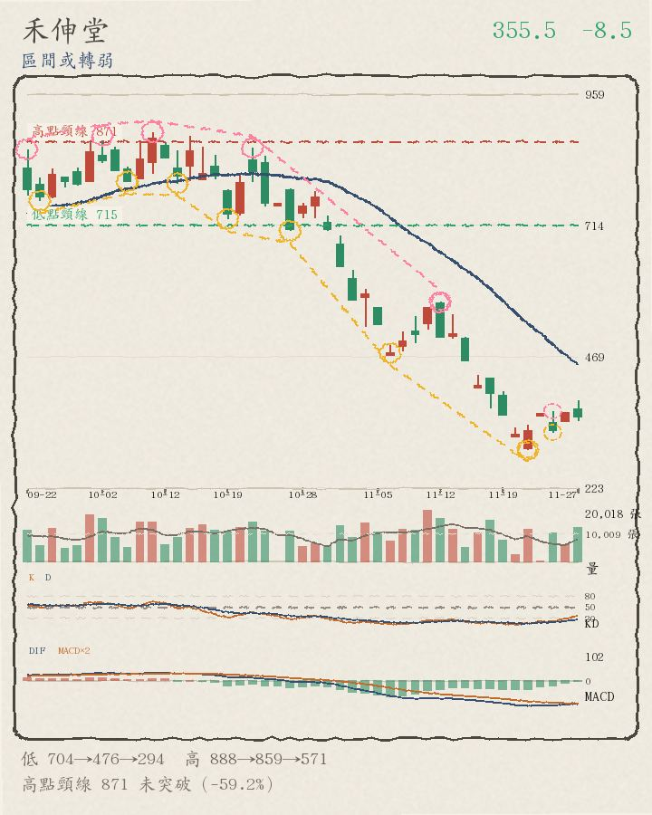
12:31 盤中 355.5（-2.34%），比加權指數弱 2.77 個百分點、跌破月線 472.1，離高點頸線 871 還差 59.2%，轉折還沒走出明顯方向。
- 月線位置：現價 355.5 在月線 472.1 之下（-24.7%）；5 日線 342.4 也在月線之下（短均在下）；月線向下
- 量能：以已過交易時間推估，今天成交量約是 20 日均量的 1.58 倍（爆量），比 20 日均量大不少；下跌卻量增，量價背離
- 關鍵價位：高點頸線 871 還沒突破，差 59.2%；前一交易日高點 364（低於 2.3%）；今天盤中高點 386（低於 7.9%）；今天盤中低點 348.5（高於 2.0%）
- 轉折結構：低點 704、475.5、294.5 與高點 888、859、571 都沒有明顯遞增，屬於區間震盪或轉弱；還沒確認的轉折低點 11-23 294.5、11-25 327；還沒確認的轉折高點 11-12 571、11-25 367（圖上虛線小圈）
鴻海 2317 上市
220.5 +4.0（+1.85%）
區間或轉弱 盤中成交值 46.03 億・全榜第 31 名（上市第 28 名）・相對大盤 +1.42
好條件 1/7：守住今日高檔（距今日高點 1% 內）
不好條件 2/7：在月線之下、月線下彎
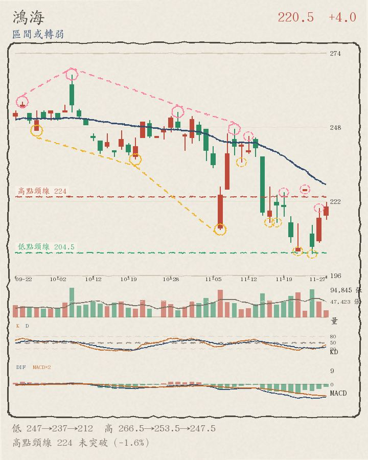
12:31 盤中 220.5（+1.85%），比加權指數強 1.42 個百分點、跌破月線 229.475，離高點頸線 224 還差 1.6%，轉折還沒走出明顯方向。
- 月線位置：現價 220.5 在月線 229.475 之下（-3.9%）；5 日線 213.1 也在月線之下（短均在下）；月線向下
- 量能：以已過交易時間推估，今天成交量約是 20 日均量的 0.53 倍（量縮），比 20 日均量少很多；上漲但量縮，量價背離
- 關鍵價位：高點頸線 224 還沒突破，差 1.6%；前一交易日高點 220（高於 0.2%）；今天盤中高點 222（低於 0.7%）；今天盤中低點 216（高於 2.1%）
- 轉折結構：低點 247、237、212.5 與高點 266.5、253.5、247.5 都沒有明顯遞增，屬於區間震盪或轉弱；還沒確認的轉折低點 11-23 205、11-25 204；還沒確認的轉折高點 11-24 226.5、11-26 220（圖上虛線小圈）
量縮
↑ 回上方清單
長榮 2603 上市
249 -5.0（-1.97%）
區間或轉弱 盤中成交值 43.86 億・全榜第 32 名（上市第 29 名）・相對大盤 -2.40
好條件 0/7：無
不好條件 5/7：今日下跌、相對大盤弱、在月線之下、貼近今日低點（1% 內）、月線下彎

12:31 盤中 249（-1.97%），比加權指數弱 2.40 個百分點、跌破月線 255.125，離高點頸線 266.3 還差 6.5%，轉折還沒走出明顯方向。
- 月線位置：現價 249 在月線 255.125 之下（-2.4%）；5 日線 246.2 也在月線之下（短均在下）；月線向下
- 量能：以已過交易時間推估，今天成交量約是 20 日均量的 1.54 倍（爆量），比 20 日均量大不少；下跌卻量增，量價背離
- 關鍵價位：高點頸線 266.3 還沒突破，差 6.5%；前一交易日高點 258（低於 3.5%）；今天盤中高點 258.5（低於 3.7%）；今天盤中低點 248（高於 0.4%）
- 轉折結構：低點 254、236.5、230 與高點 270.5、274.5、264.5 都沒有明顯遞增，屬於區間震盪或轉弱；還沒確認的轉折低點 11-17 253、11-23 230；還沒確認的轉折高點 11-24 257、11-26 258（圖上虛線小圈）
中華電 2412 上市
168 +1.5（+0.90%）
高點墊高、底部不穩 盤中成交值 43.04 億・全榜第 33 名（上市第 30 名）・相對大盤 +0.47
好條件 5/7：站上月線、月線向上、頭頭高、攻擊量（量增＋上漲）、守住今日高檔（距今日高點 1% 內）
不好條件 0/7：無
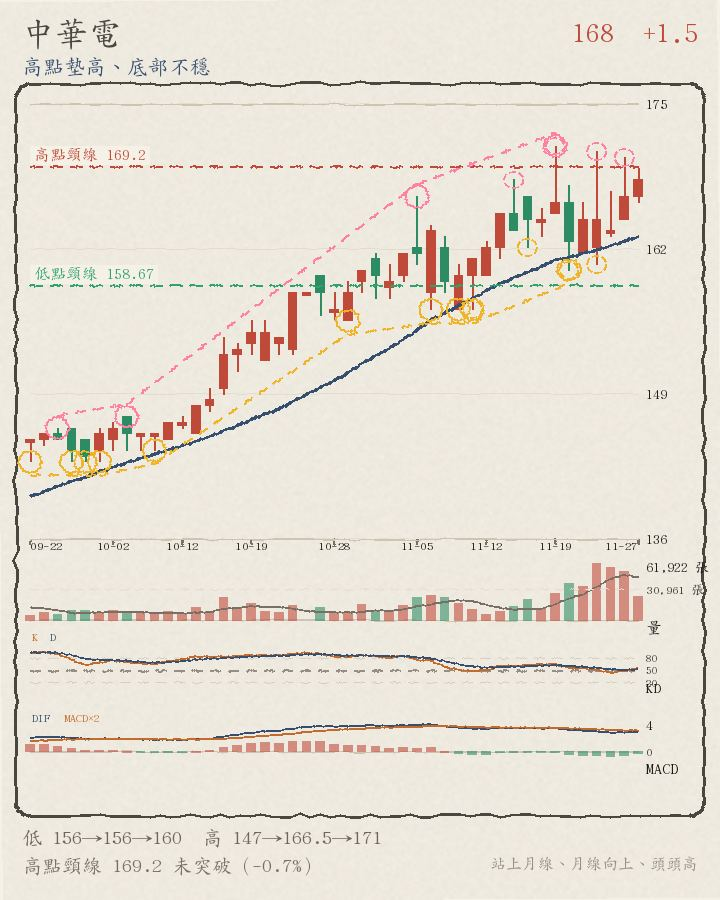
12:31 盤中 168（+0.90%），比加權指數強 0.47 個百分點、站上月線 162.575，離高點頸線 169.2 還差 0.7%，高點還在墊高（但底部沒同步墊高）。
- 月線位置：現價 168 在月線 162.575 之上（+3.3%）；5 日線 164.3 也在月線之上（短均在上）；月線向上
- 量能：以已過交易時間推估，今天成交量約是 20 日均量的 1.44 倍（量增），比 20 日均量大不少；上漲又量增，量價配合
- 關鍵價位：高點頸線 169.2 還沒突破，差 0.7%；前一交易日高點 170（低於 1.2%）；今天盤中高點 169（低於 0.6%）；今天盤中低點 166（高於 1.2%）
- 轉折結構：高點 147、166.5、171 墊高（頭頭高），但低點 156.5、156.5、160 沒有同步墊高；還沒確認的轉折低點 11-20 160、11-24 160.5；還沒確認的轉折高點 11-24 170.5、11-26 170（圖上虛線小圈）
創意 3443 上市
5120 -270.0（-5.01%）
區間或轉弱 盤中成交值 42.19 億・全榜第 34 名（上市第 31 名）・相對大盤 -5.44
好條件 0/7：無
不好條件 4/7：今日下跌、相對大盤弱、在月線之下、月線下彎
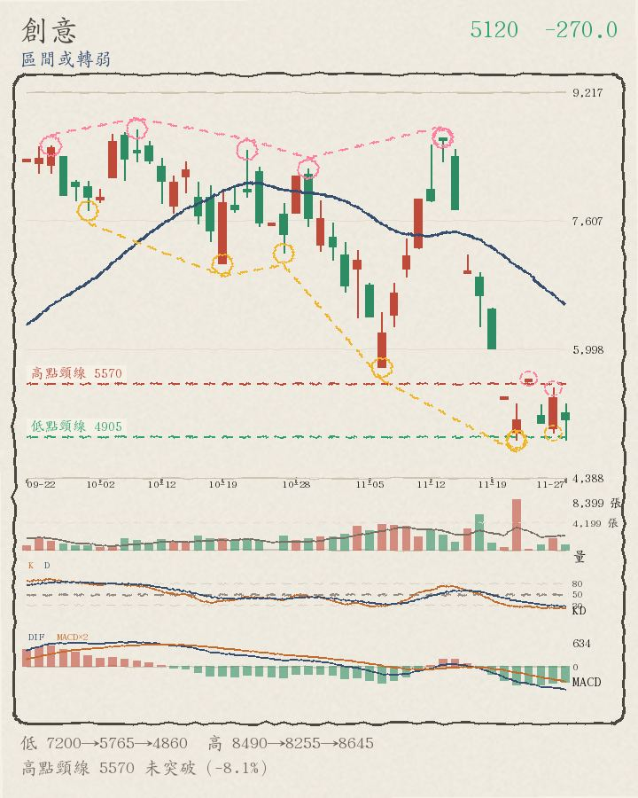
12:31 盤中 5120（-5.01%），比加權指數弱 5.44 個百分點、跌破月線 6683.5，離高點頸線 5570 還差 8.1%，轉折還沒走出明顯方向。
- 月線位置：現價 5120 在月線 6683.5 之下（-23.4%）；5 日線 5322 也在月線之下（短均在下）；月線向下
- 量能：以已過交易時間推估，今天成交量約是 20 日均量的 0.37 倍（量縮），比 20 日均量少很多
- 關鍵價位：高點頸線 5570 還沒突破，差 8.1%；前一交易日高點 5510（低於 7.1%）；今天盤中高點 5320（低於 3.8%）；今天盤中低點 4855（高於 5.5%）
- 轉折結構：低點 7200、5765、4860 與高點 8490、8255、8645 都沒有明顯遞增，屬於區間震盪或轉弱；還沒確認的轉折低點 11-23 4860、11-26 4950；還沒確認的轉折高點 11-24 5630、11-26 5510（圖上虛線小圈）
量縮
↑ 回上方清單
臻鼎-KY 4958 上市
349 -6.5（-1.83%）
區間或轉弱 盤中成交值 40.87 億・全榜第 35 名（上市第 32 名）・相對大盤 -2.26
好條件 0/7：無
不好條件 4/7：今日下跌、相對大盤弱、在月線之下、月線下彎
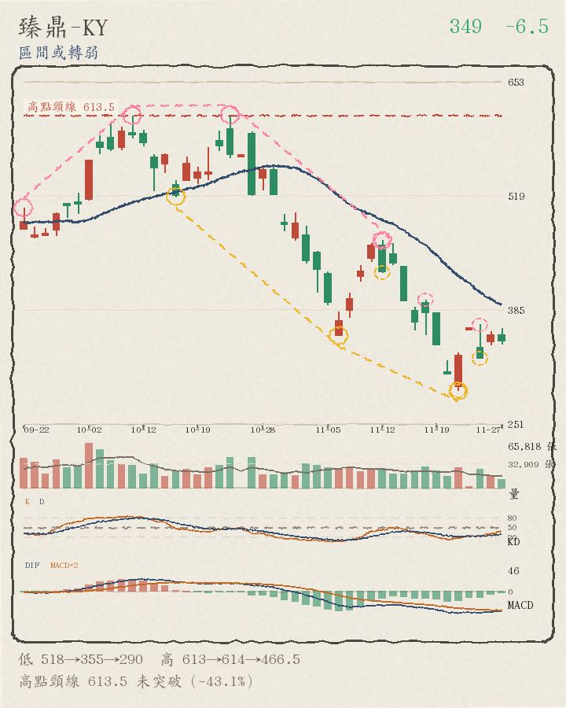
12:31 盤中 349（-1.83%），比加權指數弱 2.26 個百分點、跌破月線 397.9，離高點頸線 613.5 還差 43.1%，轉折還沒走出明顯方向。
- 月線位置：現價 349 在月線 397.9 之下（-12.3%）；5 日線 338 也在月線之下（短均在下）；月線向下
- 量能：以已過交易時間推估，今天成交量約是 20 日均量的 0.61 倍（量縮），比 20 日均量少很多
- 關鍵價位：高點頸線 613.5 還沒突破，差 43.1%；前一交易日高點 360（低於 3.1%）；今天盤中高點 363.5（低於 4.0%）；今天盤中低點 344.5（高於 1.3%）
- 轉折結構：低點 518、355、290 與高點 613、614、466.5 都沒有明顯遞增，屬於區間震盪或轉弱；還沒確認的轉折低點 11-23 290、11-25 328.5；還沒確認的轉折高點 11-18 397、11-25 367.5（圖上虛線小圈）
量縮
↑ 回上方清單
富喬 1815 上櫃
105 -2.5（-2.33%）
區間或轉弱 盤中成交值 38.02 億・全榜第 36 名（上櫃第 4 名）・相對大盤 -2.76
好條件 0/7：無
不好條件 4/7：今日下跌、相對大盤弱、在月線之下、月線下彎
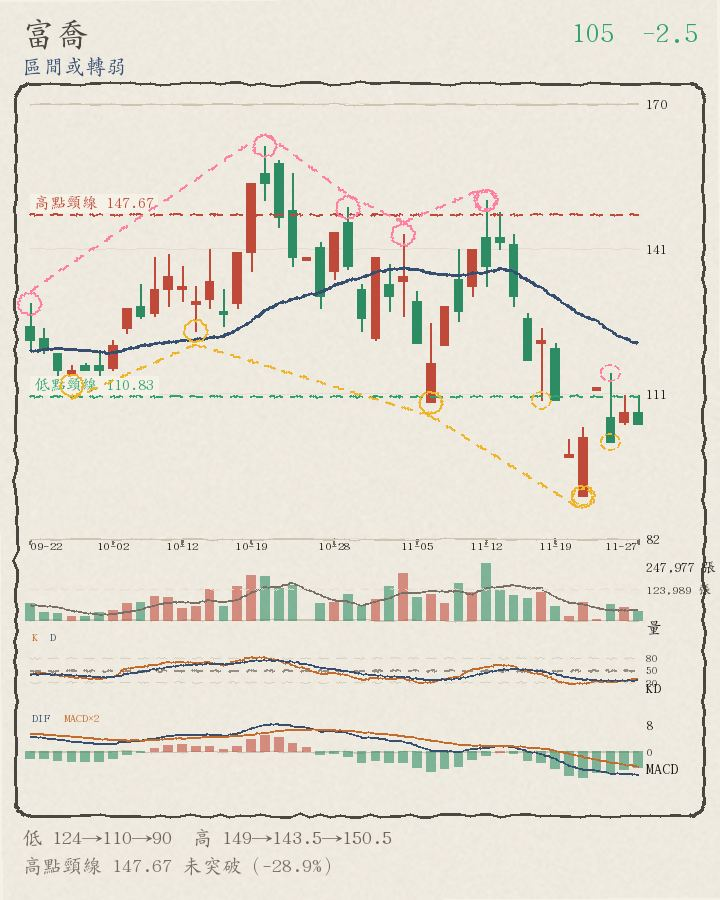
12:31 盤中 105（-2.33%），比加權指數弱 2.76 個百分點、跌破月線 122.55，離高點頸線 147.67 還差 28.9%，轉折還沒走出明顯方向。
- 月線位置：現價 105 在月線 122.55 之下（-14.3%）；5 日線 104.6 也在月線之下（短均在下）；月線向下
- 量能：以已過交易時間推估，今天成交量約是 20 日均量的 0.44 倍（量縮），比 20 日均量少很多
- 關鍵價位：高點頸線 147.67 還沒突破，差 28.9%；前一交易日高點 111（低於 5.4%）；今天盤中高點 111（低於 5.4%）；今天盤中低點 105（高於 0.0%）
- 轉折結構：低點 124、109.5、90.4 與高點 149、143.5、150.5 都沒有明顯遞增，屬於區間震盪或轉弱；還沒確認的轉折低點 11-23 90.4、11-25 101.5；還沒確認的轉折高點 11-12 150.5、11-25 115.5（圖上虛線小圈）
量縮
↑ 回上方清單
華新科 2492 上市
208.5 -1.5（-0.71%）
區間或轉弱 盤中成交值 33.76 億・全榜第 37 名（上市第 33 名）・相對大盤 -1.14
好條件 0/7：無
不好條件 5/7：今日下跌、相對大盤弱、在月線之下、貼近今日低點（1% 內）、月線下彎
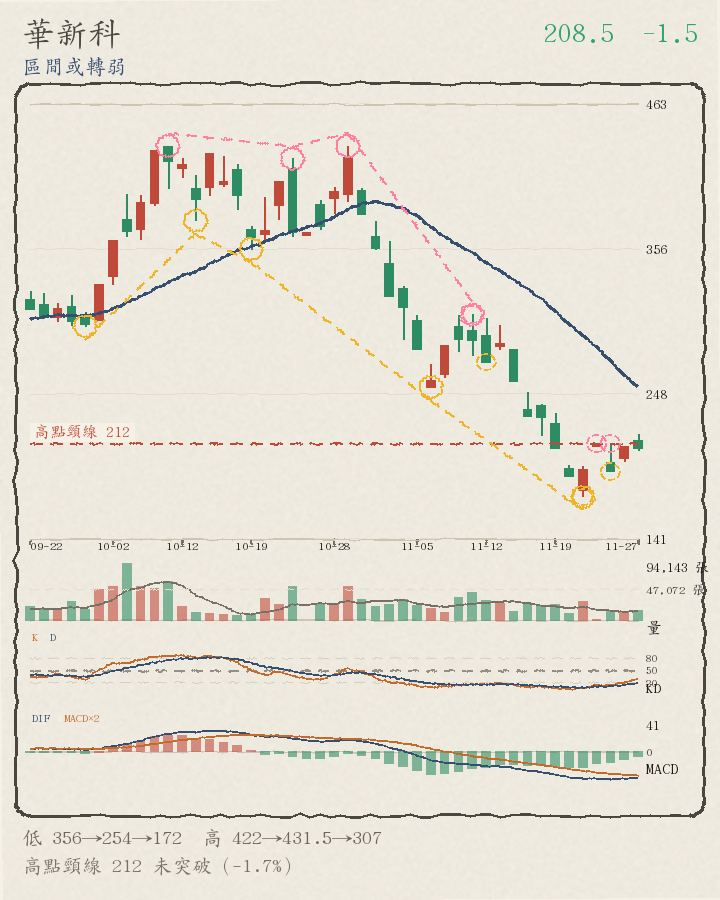
12:31 盤中 208.5（-0.71%），比加權指數弱 1.14 個百分點、跌破月線 262.5，離高點頸線 212 還差 1.7%，轉折還沒走出明顯方向。
- 月線位置：現價 208.5 在月線 262.5 之下（-20.6%）；5 日線 198.7 也在月線之下（短均在下）；月線向下
- 量能：以已過交易時間推估，今天成交量約是 20 日均量的 0.81 倍（量平），比 20 日均量少很多
- 關鍵價位：高點頸線 212 還沒突破，差 1.7%；前一交易日高點 210（低於 0.7%）；今天盤中高點 218.5（低於 4.6%）；今天盤中低點 207（高於 0.7%）
- 轉折結構：低點 355.5、253.5、172.5 與高點 422、431.5、307 都沒有明顯遞增，屬於區間震盪或轉弱；還沒確認的轉折低點 11-23 172.5、11-25 191；還沒確認的轉折高點 11-24 212、11-25 212（圖上虛線小圈）
量平
↑ 回上方清單
精材 3374 上櫃
333.5 -6.5（-1.91%）
區間或轉弱 盤中成交值 32.04 億・全榜第 38 名（上櫃第 5 名）・相對大盤 -2.34
好條件 0/7：無
不好條件 4/7：今日下跌、相對大盤弱、在月線之下、月線下彎
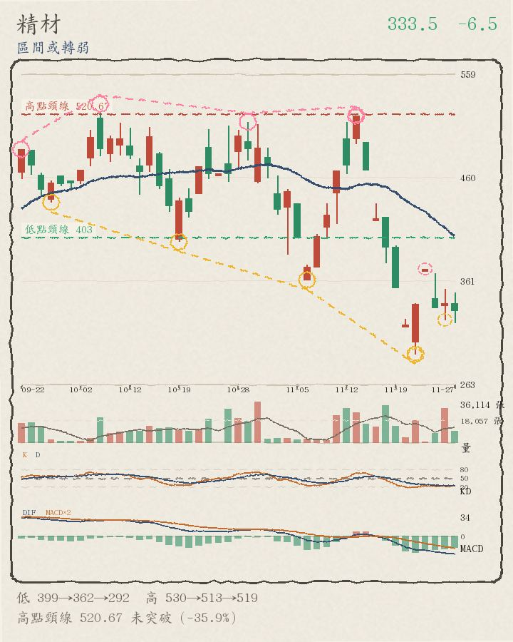
12:31 盤中 333.5（-1.91%），比加權指數弱 2.34 個百分點、跌破月線 412.275，離高點頸線 520.67 還差 35.9%，轉折還沒走出明顯方向。
- 月線位置：現價 333.5 在月線 412.275 之下（-19.1%）；5 日線 341.6 也在月線之下（短均在下）；月線向下
- 量能：以已過交易時間推估，今天成交量約是 20 日均量的 0.93 倍（量平），比 20 日均量少一些
- 關鍵價位：高點頸線 520.67 還沒突破，差 35.9%；前一交易日高點 353.5（低於 5.7%）；今天盤中高點 350（低於 4.7%）；今天盤中低點 321.5（高於 3.7%）
- 轉折結構：低點 399、362.5、291.5 與高點 530、513、519 都沒有明顯遞增，屬於區間震盪或轉弱；還沒確認的轉折低點 11-23 291.5、11-26 324.5；還沒確認的轉折高點 11-13 519、11-24 373（圖上虛線小圈）
量平
↑ 回上方清單
信驊 5274 上櫃
9570 +190.0（+2.03%）
區間或轉弱 盤中成交值 31.87 億・全榜第 39 名（上櫃第 6 名）・相對大盤 +1.60
好條件 0/7：無
不好條件 2/7：在月線之下、月線下彎
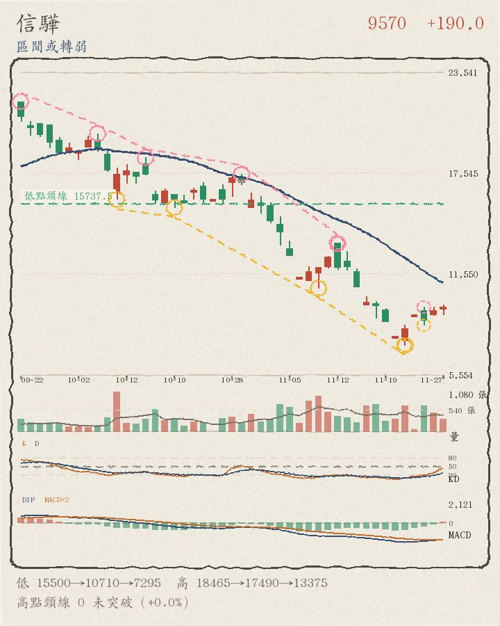
12:31 盤中 9570（+2.03%），比加權指數強 1.60 個百分點、跌破月線 11355.2，轉折還沒走出明顯方向。
- 月線位置：現價 9570 在月線 11355.2 之下（-15.7%）；5 日線 8697 也在月線之下（短均在下）；月線向下
- 量能：以已過交易時間推估，今天成交量約是 20 日均量的 0.88 倍（量平），比 20 日均量少一些
- 關鍵價位：前一交易日高點 9570（高於 0.0%）；今天盤中高點 9700（低於 1.3%）；今天盤中低點 9115（高於 5.0%）
- 轉折結構：低點 15500、10710、7295 與高點 18465、17490、13375 都沒有明顯遞增，屬於區間震盪或轉弱；還沒確認的轉折低點 11-23 7295、11-25 8500；還沒確認的轉折高點 11-12 13375、11-25 9590（圖上虛線小圈）
量平
↑ 回上方清單
玉晶光 3406 上市
709 -58.0（-7.56%）
區間或轉弱 盤中成交值 31.75 億・全榜第 40 名（上市第 34 名）・相對大盤 -7.99
好條件 0/7：無
不好條件 5/7：今日下跌、相對大盤弱、在月線之下、跌破昨日低點、月線下彎
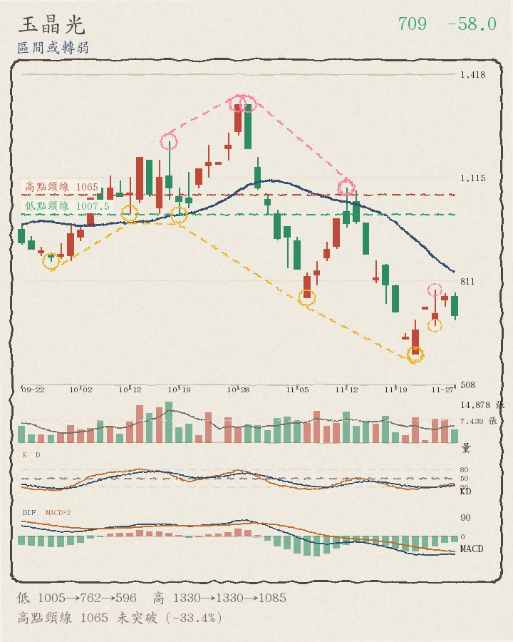
12:31 盤中 709（-7.56%），比加權指數弱 7.99 個百分點、跌破月線 856.8，離高點頸線 1065 還差 33.4%，轉折還沒走出明顯方向。
- 月線位置：現價 709 在月線 856.8 之下（-17.2%）；5 日線 706.6 也在月線之下（短均在下）；月線向下
- 量能：以已過交易時間推估，今天成交量約是 20 日均量的 0.82 倍（量平），比 20 日均量少很多
- 關鍵價位：高點頸線 1065 還沒突破，差 33.4%；前一交易日高點 775（低於 8.5%）；今天盤中高點 777（低於 8.8%）；今天盤中低點 698（高於 1.6%）
- 轉折結構：低點 1005、762、596 與高點 1330、1330、1085 都沒有明顯遞增，屬於區間震盪或轉弱；還沒確認的轉折低點 11-23 596、11-25 681；還沒確認的轉折高點 11-12 1085、11-25 785（圖上虛線小圈）
量平
↑ 回上方清單
敬鵬 2355 上市
58.8 -1.4（-2.33%）
高點墊高、底部不穩 盤中成交值 29.58 億・全榜第 41 名（上市第 35 名）・相對大盤 -2.76
好條件 3/7：站上月線、月線向上、頭頭高
不好條件 2/7：今日下跌、相對大盤弱

12:31 盤中 58.8（-2.33%），比加權指數弱 2.76 個百分點、站上月線 54.238，離高點頸線 60.33 還差 2.5%，高點還在墊高（但底部沒同步墊高）。
- 月線位置：現價 58.8 在月線 54.238 之上（+8.4%）；5 日線 55.25 也在月線之上（短均在上）；月線向上
- 量能：以已過交易時間推估，今天成交量約是 20 日均量的 2.22 倍（爆量），比 20 日均量大不少；下跌卻量增，量價背離
- 關鍵價位：高點頸線 60.33 還沒突破，差 2.5%；前一交易日高點 60.2（低於 2.3%）；今天盤中高點 62.3（低於 5.6%）；今天盤中低點 57.8（高於 1.7%）
- 轉折結構：高點 56、56.3、66.7 墊高（頭頭高），但低點 48.9、43.35、48.3 沒有同步墊高；還沒確認的轉折低點 11-20 48.3、11-25 53.1；還沒確認的轉折高點 11-25 60.2、11-26 60.2（圖上虛線小圈）
國泰金 2882 上市
103 -1.5（-1.44%）
區間或轉弱 盤中成交值 28.71 億・全榜第 42 名（上市第 36 名）・相對大盤 -1.87
好條件 0/7：無
不好條件 5/7：今日下跌、相對大盤弱、在月線之下、貼近今日低點（1% 內）、月線下彎

12:31 盤中 103（-1.44%），比加權指數弱 1.87 個百分點、跌破月線 108.52，離高點頸線 104.5 還差 1.4%，轉折還沒走出明顯方向。
- 月線位置：現價 103 在月線 108.52 之下（-5.1%）；5 日線 100.28 也在月線之下（短均在下）；月線向下
- 量能：以已過交易時間推估，今天成交量約是 20 日均量的 1.06 倍（量平），比 20 日均量大一些
- 關鍵價位：高點頸線 104.5 還沒突破，差 1.4%；前一交易日高點 104.5（低於 1.4%）；今天盤中高點 105（低於 1.9%）；今天盤中低點 102（高於 1.0%）
- 轉折結構：低點 110、101、91.5 與高點 117.5、117.5、115.5 都沒有明顯遞增，屬於區間震盪或轉弱；還沒確認的轉折低點 11-23 91.5、11-25 96.2；還沒確認的轉折高點 11-24 104.5、11-26 104.5（圖上虛線小圈）
量平
↑ 回上方清單
騰輝電子-KY 6672 上市
390.5 -8.0（-2.01%）
區間或轉弱 盤中成交值 28.58 億・全榜第 43 名（上市第 37 名）・相對大盤 -2.44
好條件 0/7：無
不好條件 4/7：今日下跌、相對大盤弱、在月線之下、月線下彎
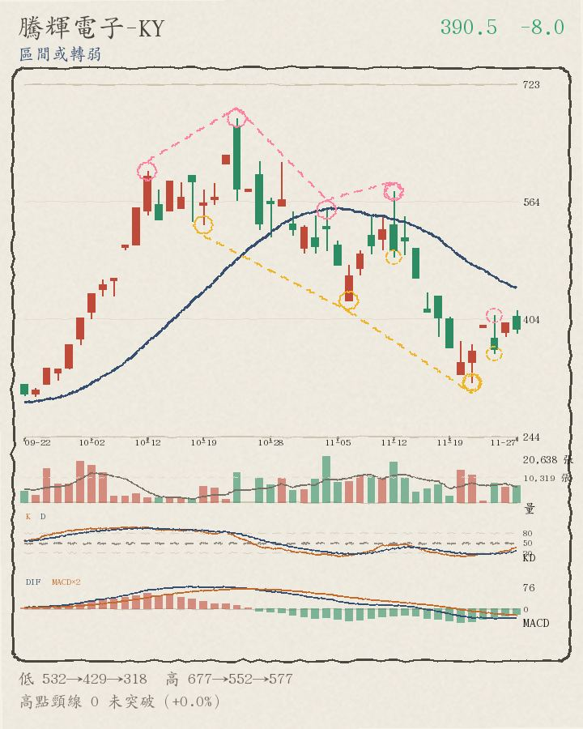
12:31 盤中 390.5（-2.01%），比加權指數弱 2.44 個百分點、跌破月線 452.9，轉折還沒走出明顯方向。
- 月線位置：現價 390.5 在月線 452.9 之下（-13.8%）；5 日線 372.3 也在月線之下（短均在下）；月線向下
- 量能：以已過交易時間推估，今天成交量約是 20 日均量的 0.98 倍（量平），跟 20 日均量差不多
- 關鍵價位：前一交易日高點 398.5（低於 2.0%）；今天盤中高點 415（低於 5.9%）；今天盤中低點 384（高於 1.7%）
- 轉折結構：低點 532、429、317.5 與高點 677、552、577 都沒有明顯遞增，屬於區間震盪或轉弱；還沒確認的轉折低點 11-23 317.5、11-25 356.5；還沒確認的轉折高點 11-12 577、11-25 409（圖上虛線小圈）
量平
↑ 回上方清單
金居 8358 上櫃
263.5 -5.0（-1.86%）
區間或轉弱 盤中成交值 28.32 億・全榜第 44 名（上櫃第 7 名）・相對大盤 -2.29
好條件 0/7：無
不好條件 4/7：今日下跌、相對大盤弱、在月線之下、月線下彎
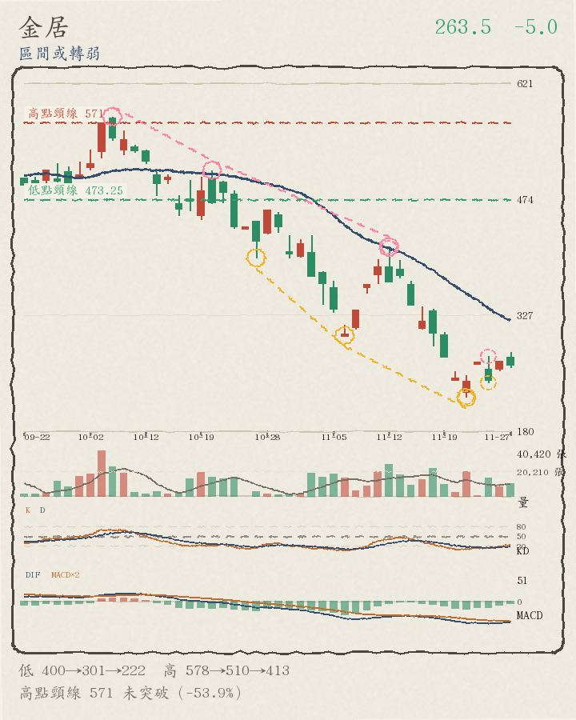
12:31 盤中 263.5（-1.86%），比加權指數弱 2.29 個百分點、跌破月線 327.1，離高點頸線 571 還差 53.9%，轉折還沒走出明顯方向。
- 月線位置：現價 263.5 在月線 327.1 之下（-19.4%）；5 日線 254.2 也在月線之下（短均在下）；月線向下
- 量能：以已過交易時間推估，今天成交量約是 20 日均量的 1.06 倍（量平），比 20 日均量大一些
- 關鍵價位：高點頸線 571 還沒突破，差 53.9%；前一交易日高點 268.5（低於 1.9%）；今天盤中高點 280（低於 5.9%）；今天盤中低點 260.5（高於 1.2%）
- 轉折結構：低點 399.5、301、222.5 與高點 578、510、413 都沒有明顯遞增，屬於區間震盪或轉弱；還沒確認的轉折低點 11-23 222.5、11-25 241；還沒確認的轉折高點 11-12 413、11-25 274.5（圖上虛線小圈）
量平
↑ 回上方清單
定穎投控 3715 上市
139.5 -4.0（-2.79%）
高點墊高、底部不穩 盤中成交值 27.86 億・全榜第 45 名（上市第 38 名）・相對大盤 -3.22
好條件 2/7：站上月線、頭頭高
不好條件 3/7：今日下跌、相對大盤弱、月線下彎
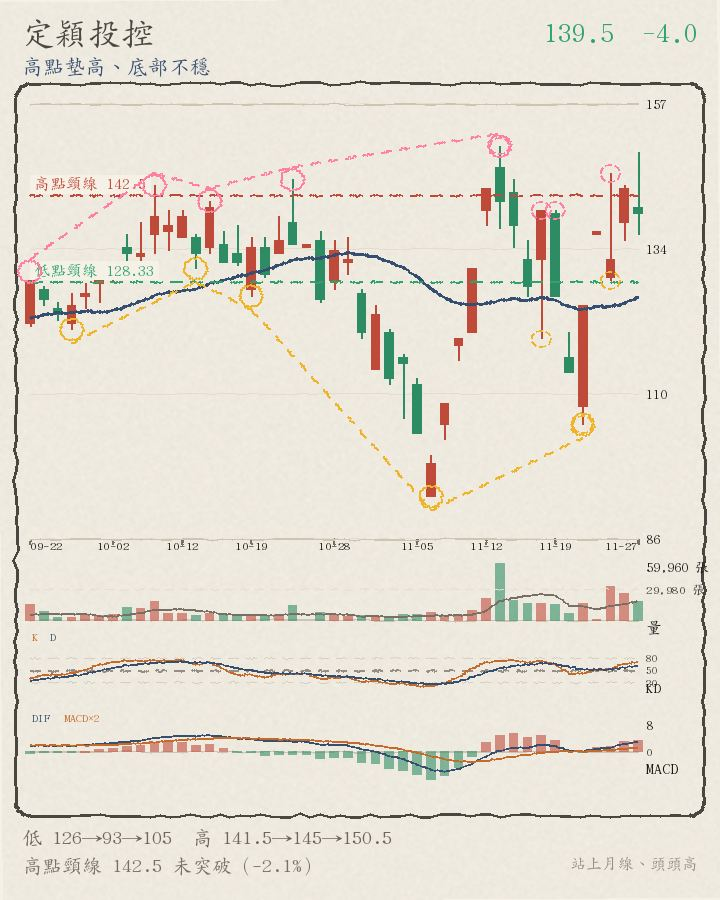
12:31 盤中 139.5（-2.79%），比加權指數弱 3.22 個百分點、站上月線 124.835，離高點頸線 142.5 還差 2.1%，高點還在墊高（但底部沒同步墊高）。
- 月線位置：現價 139.5 在月線 124.835 之上（+11.8%）；5 日線 130 也在月線之上（短均在上）；月線向下
- 量能：以已過交易時間推估，今天成交量約是 20 日均量的 1.93 倍（爆量），比 20 日均量大不少；下跌卻量增，量價背離
- 關鍵價位：高點頸線 142.5 還沒突破，差 2.1%；前一交易日高點 144（低於 3.1%）；今天盤中高點 149.5（低於 6.7%）；今天盤中低點 136（高於 2.6%）
- 轉折結構：高點 141.5、145、150.5 墊高（頭頭高），但低點 126、93.2、105 沒有同步墊高；還沒確認的轉折低點 11-23 105、11-25 128.5；還沒確認的轉折高點 11-19 140、11-25 146（圖上虛線小圈）
中砂 1560 上市
661 +22.0（+3.44%）
區間或轉弱 盤中成交值 27.64 億・全榜第 46 名（上市第 39 名）・相對大盤 +3.01
好條件 2/7：突破頸線、攻擊量（量增＋上漲）
不好條件 2/7：在月線之下、月線下彎
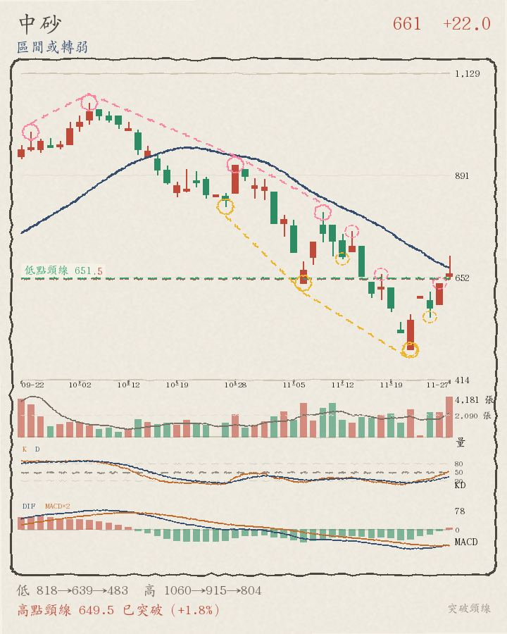
12:31 盤中 661（+3.44%），比加權指數強 3.01 個百分點、跌破月線 685.7，已突破高點頸線 649.5，轉折還沒走出明顯方向。
- 月線位置：現價 661 在月線 685.7 之下（-3.6%）；5 日線 580.8 也在月線之下（短均在下）；月線向下
- 量能：以已過交易時間推估，今天成交量約是 20 日均量的 2.66 倍（爆量），比 20 日均量大不少；上漲又量增，量價配合
- 關鍵價位：高點頸線 649.5 已站上；前一交易日高點 639（高於 3.4%）；今天盤中高點 702（低於 5.8%）；今天盤中低點 648（高於 2.0%）
- 轉折結構：低點 818、639、483 與高點 1060、915、804 都沒有明顯遞增，屬於區間震盪或轉弱；還沒確認的轉折低點 11-23 483、11-25 560；還沒確認的轉折高點 11-18 660、11-26 639（圖上虛線小圈）
大量 3167 上市
598 -22.0（-3.55%）
區間或轉弱 盤中成交值 27.26 億・全榜第 47 名（上市第 40 名）・相對大盤 -3.98
好條件 0/7：無
不好條件 4/7：今日下跌、相對大盤弱、在月線之下、月線下彎
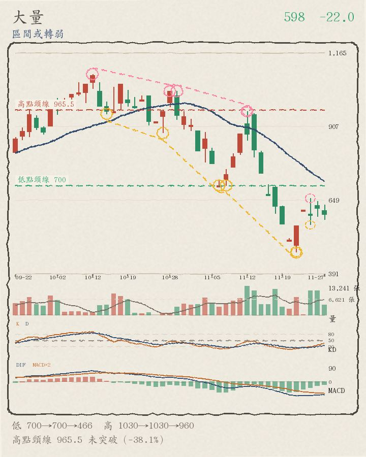
12:31 盤中 598（-3.55%），比加權指數弱 3.98 個百分點、跌破月線 732.05，離高點頸線 965.5 還差 38.1%，轉折還沒走出明顯方向。
- 月線位置：現價 598 在月線 732.05 之下（-18.3%）；5 日線 580 也在月線之下（短均在下）；月線向下
- 量能：以已過交易時間推估，今天成交量約是 20 日均量的 0.93 倍（量平），比 20 日均量少一些
- 關鍵價位：高點頸線 965.5 還沒突破，差 38.1%；前一交易日高點 645（低於 7.3%）；今天盤中高點 632（低於 5.4%）；今天盤中低點 580（高於 3.1%）
- 轉折結構：低點 700、700、466 與高點 1030、1030、960 都沒有明顯遞增，屬於區間震盪或轉弱；還沒確認的轉折低點 11-23 466、11-25 562；還沒確認的轉折高點 11-12 960、11-25 655（圖上虛線小圈）
量平
↑ 回上方清單
鴻勁 7769 上市
3005 -145.0（-4.60%）
區間或轉弱 盤中成交值 26.86 億・全榜第 48 名（上市第 41 名）・相對大盤 -5.03
好條件 0/7：無
不好條件 5/7：今日下跌、相對大盤弱、在月線之下、跌破昨日低點、月線下彎
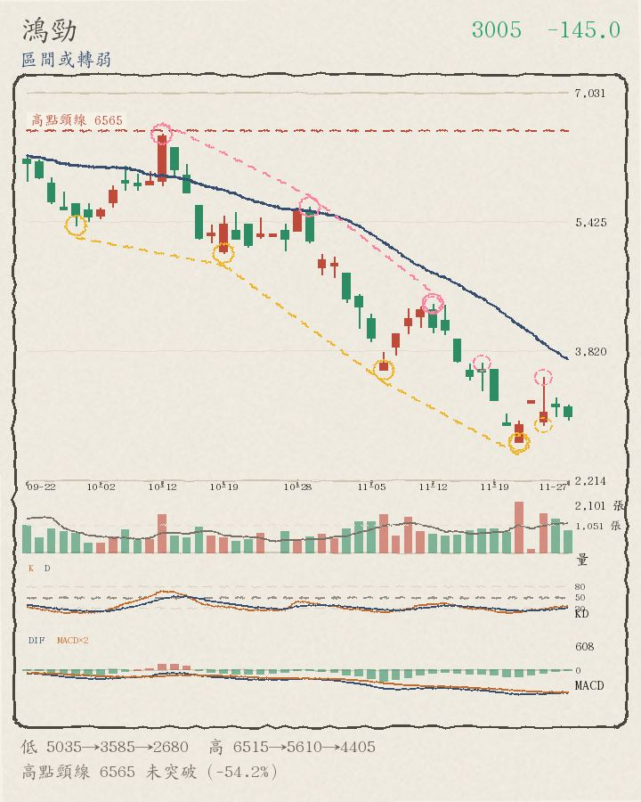
12:31 盤中 3005（-4.60%），比加權指數弱 5.03 個百分點、跌破月線 3816.5，離高點頸線 6565 還差 54.2%，轉折還沒走出明顯方向。
- 月線位置：現價 3005 在月線 3816.5 之下（-21.3%）；5 日線 3043 也在月線之下（短均在下）；月線向下
- 量能：以已過交易時間推估，今天成交量約是 20 日均量的 1.15 倍（量增），比 20 日均量大不少；下跌卻量增，量價背離
- 關鍵價位：高點頸線 6565 還沒突破，差 54.2%；前一交易日高點 3240（低於 7.3%）；今天盤中高點 3145（低於 4.5%）；今天盤中低點 2960（高於 1.5%）
- 轉折結構：低點 5035、3585、2680 與高點 6515、5610、4405 都沒有明顯遞增，屬於區間震盪或轉弱；還沒確認的轉折低點 11-23 2680、11-25 2900；還沒確認的轉折高點 11-18 3670、11-25 3495（圖上虛線小圈）
量增
↑ 回上方清單
京元電子 2449 上市
184 -4.0（-2.13%）
區間或轉弱 盤中成交值 26.17 億・全榜第 49 名（上市第 42 名）・相對大盤 -2.56
好條件 0/7：無
不好條件 4/7：今日下跌、相對大盤弱、在月線之下、月線下彎
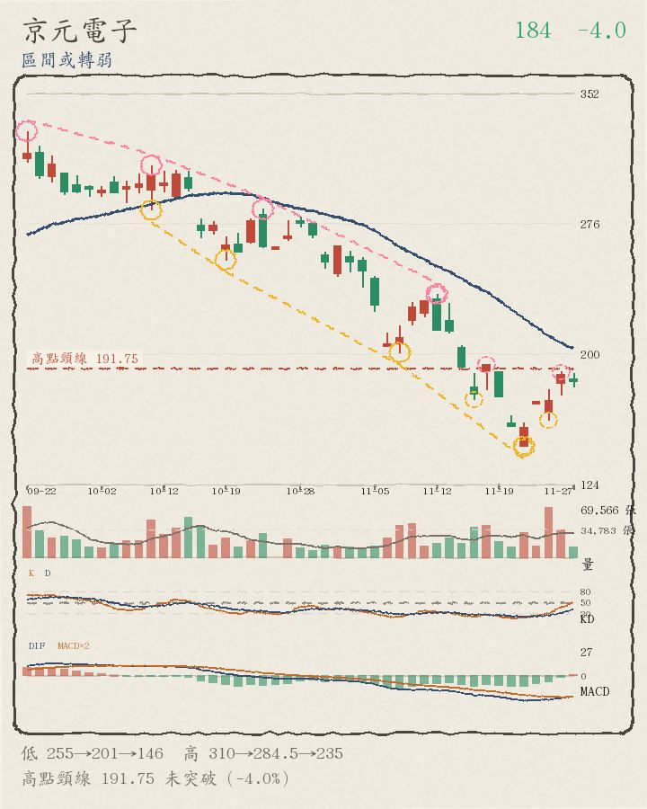
12:31 盤中 184（-2.13%），比加權指數弱 2.56 個百分點、跌破月線 206.725，離高點頸線 191.75 還差 4.0%，轉折還沒走出明顯方向。
- 月線位置：現價 184 在月線 206.725 之下（-11.0%）；5 日線 169.6 也在月線之下（短均在下）；月線向下
- 量能：以已過交易時間推估，今天成交量約是 20 日均量的 0.71 倍（量平），比 20 日均量少很多
- 關鍵價位：高點頸線 191.75 還沒突破，差 4.0%；前一交易日高點 189.5（低於 2.9%）；今天盤中高點 188.5（低於 2.4%）；今天盤中低點 181（高於 1.7%）
- 轉折結構：低點 255、201、146 與高點 310、284.5、235 都沒有明顯遞增，屬於區間震盪或轉弱；還沒確認的轉折低點 11-23 146、11-25 161.5；還沒確認的轉折高點 11-18 194、11-26 189.5（圖上虛線小圈）
量平
↑ 回上方清單
穎崴 6515 上市
3355 +40.0（+1.21%）
區間或轉弱 盤中成交值 25.53 億・全榜第 50 名（上市第 43 名）・相對大盤 +0.78
好條件 2/7：突破頸線、攻擊量（量增＋上漲）
不好條件 2/7：在月線之下、月線下彎
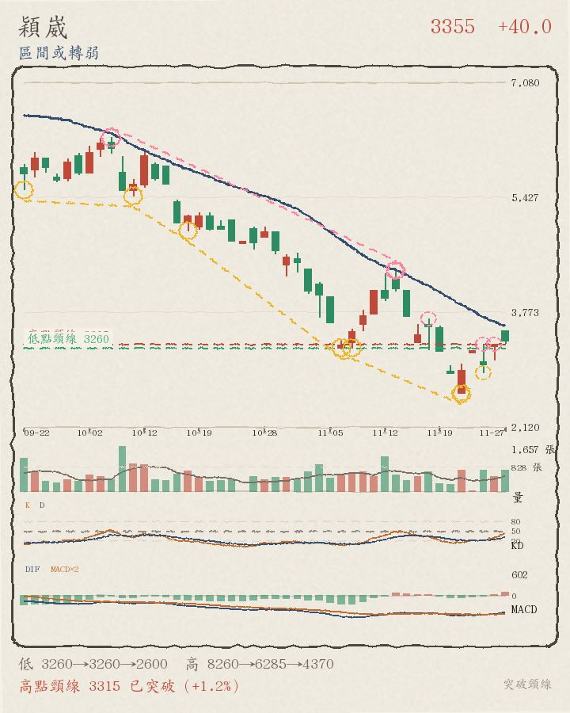
12:31 盤中 3355（+1.21%），比加權指數強 0.78 個百分點、跌破月線 3636.75，已突破高點頸線 3315，轉折還沒走出明顯方向。
- 月線位置：現價 3355 在月線 3636.75 之下（-7.8%）；5 日線 3073 也在月線之下（短均在下）；月線向下
- 量能：以已過交易時間推估，今天成交量約是 20 日均量的 1.68 倍（爆量），比 20 日均量大不少；上漲又量增，量價配合
- 關鍵價位：高點頸線 3315 已站上；前一交易日高點 3315（高於 1.2%）；今天盤中高點 3505（低於 4.3%）；今天盤中低點 3320（高於 1.1%）
- 轉折結構：低點 3260、3260、2600 與高點 8260、6285、4370 都沒有明顯遞增，屬於區間震盪或轉弱；還沒確認的轉折低點 11-23 2600、11-25 2900；還沒確認的轉折高點 11-25 3315、11-26 3315（圖上虛線小圈）
雙鴻 3324 上櫃
809 -49.0（-5.71%）
區間或轉弱 盤中成交值 23.86 億・全榜第 51 名（上櫃第 8 名）・相對大盤 -6.14
好條件 0/7：無
不好條件 4/7：今日下跌、相對大盤弱、在月線之下、月線下彎
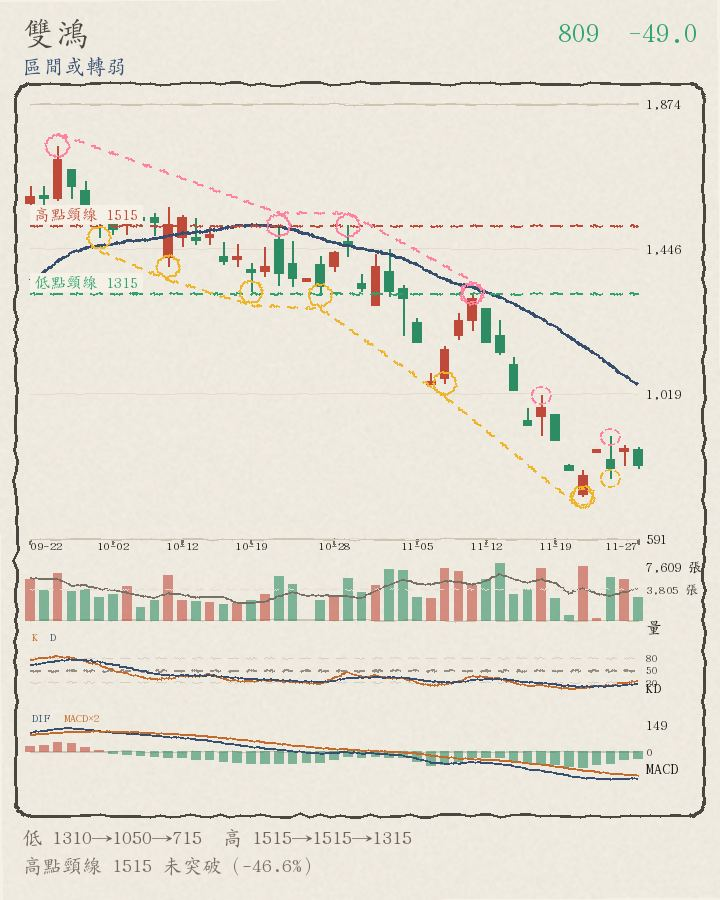
12:31 盤中 809（-5.71%），比加權指數弱 6.14 個百分點、跌破月線 1073.2，離高點頸線 1515 還差 46.6%，轉折還沒走出明顯方向。
- 月線位置：現價 809 在月線 1073.2 之下（-24.6%）；5 日線 816.2 也在月線之下（短均在下）；月線向下
- 量能：以已過交易時間推估，今天成交量約是 20 日均量的 0.79 倍（量平），比 20 日均量少很多
- 關鍵價位：高點頸線 1515 還沒突破，差 46.6%；前一交易日高點 867（低於 6.7%）；今天盤中高點 861（低於 6.0%）；今天盤中低點 800（高於 1.1%）
- 轉折結構：低點 1310、1050、715 與高點 1515、1515、1315 都沒有明顯遞增，屬於區間震盪或轉弱；還沒確認的轉折低點 11-23 715、11-25 769；還沒確認的轉折高點 11-18 1015、11-25 892（圖上虛線小圈）
量平
↑ 回上方清單
中信金 2891 上市
69 +0.1（+0.15%）
區間或轉弱 盤中成交值 23.02 億・全榜第 52 名（上市第 44 名）・相對大盤 -0.28
好條件 1/7：守住今日高檔（距今日高點 1% 內）
不好條件 3/7：相對大盤弱、在月線之下、月線下彎
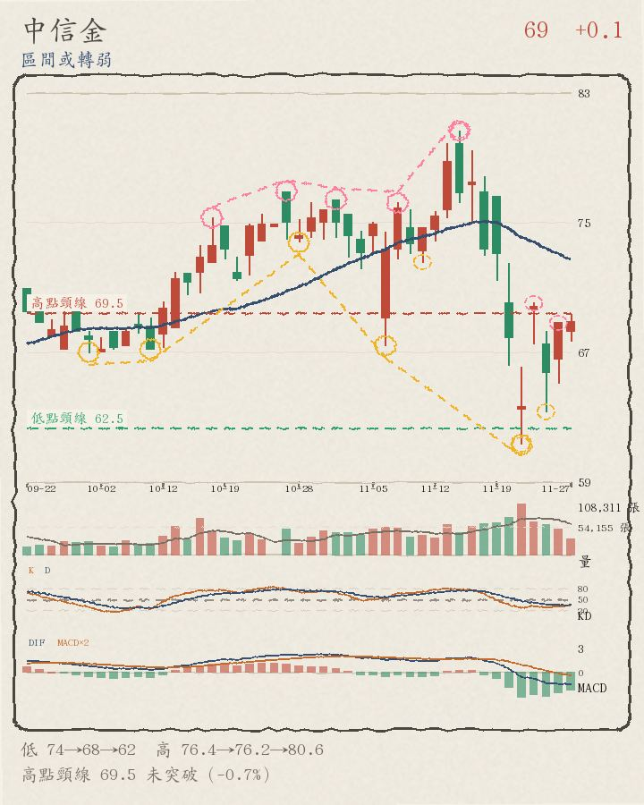
12:31 盤中 69（+0.15%），比加權指數弱 0.28 個百分點、跌破月線 73.11，離高點頸線 69.5 還差 0.7%，轉折還沒走出明顯方向。
- 月線位置：現價 69 在月線 73.11 之下（-5.6%）；5 日線 67.3 也在月線之下（短均在下）；月線向下
- 量能：以已過交易時間推估，今天成交量約是 20 日均量的 0.76 倍（量平），比 20 日均量少很多；上漲但量縮，量價背離
- 關鍵價位：高點頸線 69.5 還沒突破，差 0.7%；前一交易日高點 68.9（高於 0.1%）；今天盤中高點 69.4（低於 0.6%）；今天盤中低點 67.8（高於 1.8%）
- 轉折結構：低點 73.8、67.5、61.5 與高點 76.4、76.2、80.6 都沒有明顯遞增，屬於區間震盪或轉弱；還沒確認的轉折低點 11-23 61.5、11-25 63.5；還沒確認的轉折高點 11-24 70.1、11-26 68.9（圖上虛線小圈）
量平
↑ 回上方清單
光寶科 2301 上市
197 -1.5（-0.76%）
區間或轉弱 盤中成交值 22.44 億・全榜第 53 名（上市第 45 名）・相對大盤 -1.19
好條件 0/7：無
不好條件 4/7：今日下跌、相對大盤弱、在月線之下、月線下彎
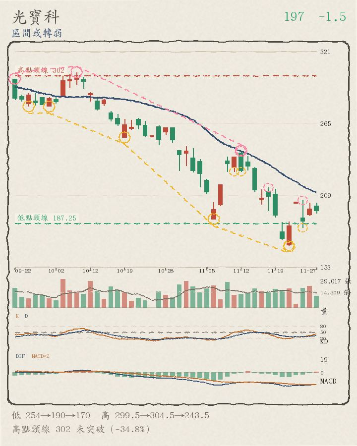
12:31 盤中 197（-0.76%），比加權指數弱 1.19 個百分點、跌破月線 213.55，離高點頸線 302 還差 34.8%，轉折還沒走出明顯方向。
- 月線位置：現價 197 在月線 213.55 之下（-7.8%）；5 日線 190.5 也在月線之下（短均在下）；月線向下
- 量能：以已過交易時間推估，今天成交量約是 20 日均量的 0.86 倍（量平），比 20 日均量少一些
- 關鍵價位：高點頸線 302 還沒突破，差 34.8%；前一交易日高點 203（低於 3.0%）；今天盤中高點 203（低於 3.0%）；今天盤中低點 195（高於 1.0%）
- 轉折結構：低點 254、190.5、169.5 與高點 299.5、304.5、243.5 都沒有明顯遞增，屬於區間震盪或轉弱；還沒確認的轉折低點 11-23 169.5、11-25 184；還沒確認的轉折高點 11-18 215、11-25 205（圖上虛線小圈）
量平
↑ 回上方清單
兆豐金 2886 上市
47.95 -0.3（-0.62%）
底部墊高、未過前高 盤中成交值 20.96 億・全榜第 54 名（上市第 46 名）・相對大盤 -1.05
好條件 1/7：底底高
不好條件 6/7：跌破前低、今日下跌、相對大盤弱、在月線之下、跌破昨日低點、月線下彎
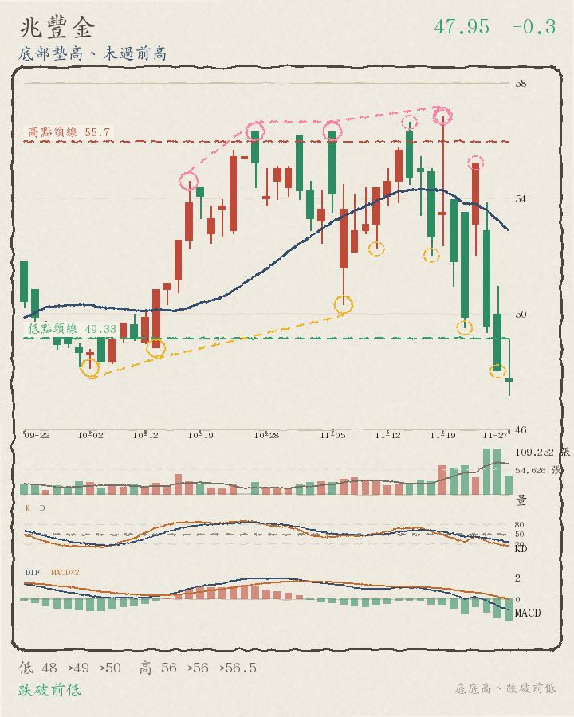
12:31 盤中 47.95（-0.62%），比加權指數弱 1.05 個百分點、跌破月線 53.143，離高點頸線 55.7 還差 13.9%，底部還在墊高（但高點沒同步創高）。
- 月線位置：現價 47.95 在月線 53.143 之下（-9.8%）；5 日線 50.95 也在月線之下（短均在下）；月線向下
- 量能：以已過交易時間推估，今天成交量約是 20 日均量的 1.49 倍（量增），比 20 日均量大不少；下跌卻量增，量價背離
- 關鍵價位：已跌破前一個轉折低點；高點頸線 55.7 還在現價上方 13.9%；前一交易日高點 51（低於 6.0%）；今天盤中高點 49.3（低於 2.7%）；今天盤中低點 47.45（高於 1.1%）
- 轉折結構：低點 48.35、49、50.4 墊高（底底高），但高點 56、56、56.5 沒有同步創高；還沒確認的轉折低點 11-23 49.65、11-26 48.25；還沒確認的轉折高點 11-19 56.5、11-24 55（圖上虛線小圈）
環球晶 6488 上櫃
509 -9.0（-1.74%）
區間或轉弱 盤中成交值 20.07 億・全榜第 55 名（上櫃第 9 名）・相對大盤 -2.17
好條件 0/7：無
不好條件 5/7：今日下跌、相對大盤弱、在月線之下、貼近今日低點（1% 內）、月線下彎
12:31 盤中 509（-1.74%），比加權指數弱 2.17 個百分點、跌破月線 575.9，離高點頸線 1012.5 還差 49.7%，轉折還沒走出明顯方向。
- 月線位置：現價 509 在月線 575.9 之下（-11.6%）；5 日線 480.6 也在月線之下（短均在下）；月線向下
- 量能：以已過交易時間推估，今天成交量約是 20 日均量的 0.46 倍（量縮），比 20 日均量少很多
- 關鍵價位：高點頸線 1012.5 還沒突破，差 49.7%；前一交易日高點 524（低於 2.9%）；今天盤中高點 526（低於 3.2%）；今天盤中低點 505（高於 0.8%）
- 轉折結構：低點 872、508、410.5 與高點 1010、1260、663 都沒有明顯遞增，屬於區間震盪或轉弱；還沒確認的轉折低點 11-23 410.5、11-25 455.5；還沒確認的轉折高點 11-18 577、11-26 524（圖上虛線小圈）
量縮
↑ 回上方清單
旺矽 6223 上櫃
4035 -80.0（-1.94%）
區間或轉弱 盤中成交值 19.65 億・全榜第 56 名（上櫃第 10 名）・相對大盤 -2.37
好條件 0/7：無
不好條件 4/7：今日下跌、相對大盤弱、在月線之下、月線下彎
12:31 盤中 4035（-1.94%），比加權指數弱 2.37 個百分點、跌破月線 4121.25，離高點頸線 4160 還差 3.0%，轉折還沒走出明顯方向。
- 月線位置：現價 4035 在月線 4121.25 之下（-2.1%）；5 日線 3887 也在月線之下（短均在下）；月線向下
- 量能：以已過交易時間推估，今天成交量約是 20 日均量的 0.53 倍（量縮），比 20 日均量少很多
- 關鍵價位：高點頸線 4160 還沒突破，差 3.0%；前一交易日高點 4135（低於 2.4%）；今天盤中高點 4230（低於 4.6%）；今天盤中低點 3940（高於 2.4%）
- 轉折結構：低點 4995、3355、3250 與高點 6160、5150、5100 都沒有明顯遞增，屬於區間震盪或轉弱；還沒確認的轉折低點 11-23 3250、11-25 3770；還沒確認的轉折高點 11-24 4185、11-26 4135（圖上虛線小圈）
量縮
↑ 回上方清單
富世達 6805 上市
1650 -35.0（-2.08%）
區間或轉弱 盤中成交值 19.49 億・全榜第 57 名（上市第 47 名）・相對大盤 -2.51
好條件 0/7：無
不好條件 5/7：今日下跌、相對大盤弱、在月線之下、貼近今日低點（1% 內）、月線下彎
12:31 盤中 1650（-2.08%），比加權指數弱 2.51 個百分點、跌破月線 1845.25，離高點頸線 2505 還差 34.1%，轉折還沒走出明顯方向。
- 月線位置：現價 1650 在月線 1845.25 之下（-10.6%）；5 日線 1541 也在月線之下（短均在下）；月線向下
- 量能：以已過交易時間推估，今天成交量約是 20 日均量的 0.98 倍（量平），跟 20 日均量差不多
- 關鍵價位：高點頸線 2505 還沒突破，差 34.1%；前一交易日高點 1685（低於 2.1%）；今天盤中高點 1735（低於 4.9%）；今天盤中低點 1645（高於 0.3%）
- 轉折結構：低點 2200、1670、1290 與高點 2515、2490、2150 都沒有明顯遞增，屬於區間震盪或轉弱；還沒確認的轉折低點 11-23 1290、11-25 1440；還沒確認的轉折高點 11-18 1795、11-25 1695（圖上虛線小圈）
量平
↑ 回上方清單
中租-KY 5871 上市
99.7 -1.3（-1.29%）
區間或轉弱 盤中成交值 19.46 億・全榜第 58 名（上市第 48 名）・相對大盤 -1.72
好條件 0/7：無
不好條件 6/7：今日下跌、相對大盤弱、在月線之下、貼近今日低點（1% 內）、跌破昨日低點、月線下彎
12:31 盤中 99.7（-1.29%），比加權指數弱 1.72 個百分點、跌破月線 101.89，離高點頸線 105.3 還差 5.3%，轉折還沒走出明顯方向。
- 月線位置：現價 99.7 在月線 101.89 之下（-2.1%）；5 日線 99.42 也在月線之下（短均在下）；月線向下
- 量能：以已過交易時間推估，今天成交量約是 20 日均量的 2.32 倍（爆量），比 20 日均量大不少；下跌卻量增，量價背離
- 關鍵價位：高點頸線 105.3 還沒突破，差 5.3%；前一交易日高點 103（低於 3.2%）；今天盤中高點 102（低於 2.3%）；今天盤中低點 99.6（高於 0.1%）
- 轉折結構：低點 105.5、98.1、93.8 與高點 108、106、106 都沒有明顯遞增，屬於區間震盪或轉弱；還沒確認的轉折低點 11-20 93.8、11-25 99；還沒確認的轉折高點 11-24 103.5、11-26 103（圖上虛線小圈）
友達 2409 上市
25.25 -0.5（-1.75%）
區間或轉弱 盤中成交值 19.1 億・全榜第 59 名（上市第 49 名）・相對大盤 -2.18
好條件 0/7：無
不好條件 5/7：今日下跌、相對大盤弱、在月線之下、貼近今日低點（1% 內）、月線下彎
12:31 盤中 25.25（-1.75%），比加權指數弱 2.18 個百分點、跌破月線 27.448，離高點頸線 26.5 還差 4.7%，轉折還沒走出明顯方向。
- 月線位置：現價 25.25 在月線 27.448 之下（-8.0%）；5 日線 24.74 也在月線之下（短均在下）；月線向下
- 量能：以已過交易時間推估，今天成交量約是 20 日均量的 0.42 倍（量縮），比 20 日均量少很多
- 關鍵價位：高點頸線 26.5 還沒突破，差 4.7%；前一交易日高點 26.1（低於 3.3%）；今天盤中高點 26.2（低於 3.6%）；今天盤中低點 25.2（高於 0.2%）
- 轉折結構：低點 24.55、22.7、22.7 與高點 37.8、36.65、31.5 都沒有明顯遞增，屬於區間震盪或轉弱；還沒確認的轉折低點 11-23 22.7、11-25 23.85；還沒確認的轉折高點 11-24 26.5、11-25 26.5（圖上虛線小圈）
量縮
↑ 回上方清單
緯創 3231 上市
163.5 -3.5（-2.10%）
區間或轉弱 盤中成交值 18.64 億・全榜第 60 名（上市第 50 名）・相對大盤 -2.53
好條件 1/7：守住今日高檔（距今日高點 1% 內）
不好條件 5/7：今日下跌、相對大盤弱、在月線之下、貼近今日低點（1% 內）、月線下彎
12:31 盤中 163.5（-2.10%），比加權指數弱 2.53 個百分點、跌破月線 165.625，離高點頸線 164.67 還差 0.7%，轉折還沒走出明顯方向。
- 月線位置：現價 163.5 在月線 165.625 之下（-1.3%）；5 日線 155.5 也在月線之下（短均在下）；月線向下
- 量能：以已過交易時間推估，今天成交量約是 20 日均量的 0.48 倍（量縮），比 20 日均量少很多
- 關鍵價位：高點頸線 164.67 還沒突破，差 0.7%；前一交易日高點 167（低於 2.1%）；今天盤中高點 165（低於 0.9%）；今天盤中低點 162（高於 0.9%）
- 轉折結構：低點 173.5、152、143 與高點 194.5、199.5、181 都沒有明顯遞增，屬於區間震盪或轉弱；還沒確認的轉折低點 11-23 143、11-25 148；還沒確認的轉折高點 11-24 163、11-26 167（圖上虛線小圈）
量縮
↑ 回上方清單
天品 6199 上櫃
173 +0.0（+0.00%）
上升趨勢（底底高＋頭頭高） 盤中成交值 15.63 億・全榜第 61 名（上櫃第 11 名）・相對大盤 -0.43
好條件 5/7：站上月線、月線向上、底底高、頭頭高、突破頸線
不好條件 2/7：相對大盤弱、貼近今日低點（1% 內）
12:31 盤中 173（+0.00%），比加權指數弱 0.43 個百分點、站上月線 168.25，已突破高點頸線 172.1，轉折結構仍是底底高＋頭頭高。
- 月線位置：現價 173 在月線 168.25 之上（+2.8%）；5 日線 172.1 也在月線之上（短均在上）；月線向上
- 量能：以已過交易時間推估，今天成交量約是 20 日均量的 1.17 倍（量增），比 20 日均量大不少
- 關鍵價位：高點頸線 172.1 已站上；前一交易日高點 173.5（低於 0.3%）；今天盤中高點 173（高於 0.0%）；今天盤中低點 172.5（高於 0.3%）
- 轉折結構：低點 134.5、156、168 一路墊高、高點 153.5、150、171 也一路墊高，是底底高＋頭頭高；還沒確認的轉折低點 11-20 168、11-25 171；還沒確認的轉折高點 11-24 174、11-26 173.5（圖上虛線小圈）
萬潤 6187 上櫃
692 -23.0（-3.22%）
區間或轉弱 盤中成交值 14.22 億・全榜第 62 名（上櫃第 12 名）・相對大盤 -3.65
好條件 0/7：無
不好條件 4/7：今日下跌、相對大盤弱、在月線之下、月線下彎
12:31 盤中 692（-3.22%），比加權指數弱 3.65 個百分點、跌破月線 889.05，轉折還沒走出明顯方向。
- 月線位置：現價 692 在月線 889.05 之下（-22.2%）；5 日線 687.8 也在月線之下（短均在下）；月線向下
- 量能：以已過交易時間推估，今天成交量約是 20 日均量的 1.20 倍（量增），比 20 日均量大不少；下跌卻量增，量價背離
- 關鍵價位：前一交易日高點 744（低於 7.0%）；今天盤中高點 732（低於 5.5%）；今天盤中低點 682（高於 1.5%）
- 轉折結構：低點 1180、864、576 與高點 1680、1360、1060 都沒有明顯遞增，屬於區間震盪或轉弱；還沒確認的轉折低點 11-23 576、11-25 666；還沒確認的轉折高點 11-12 1060、11-25 775（圖上虛線小圈）
量增
↑ 回上方清單
鈺創 5351 上櫃
92.9 +1.6（+1.75%）
區間或轉弱 盤中成交值 12.27 億・全榜第 63 名（上櫃第 13 名）・相對大盤 +1.32
好條件 2/7：站上月線、攻擊量（量增＋上漲）
不好條件 1/7：月線下彎
12:31 盤中 92.9（+1.75%），比加權指數強 1.32 個百分點、站上月線 89.52，離高點頸線 117.17 還差 20.7%，轉折還沒走出明顯方向。
- 月線位置：現價 92.9 在月線 89.52 之上（+3.8%）；5 日線 81.98 也在月線之下（短均在下）；月線向下
- 量能：以已過交易時間推估，今天成交量約是 20 日均量的 1.78 倍（爆量），比 20 日均量大不少；上漲又量增，量價配合
- 關鍵價位：高點頸線 117.17 還沒突破，差 20.7%；前一交易日高點 91.3（高於 1.8%）；今天盤中高點 95.6（低於 2.8%）；今天盤中低點 91.5（高於 1.5%）
- 轉折結構：低點 100、79.3、70 與高點 119、117.5、102.5 都沒有明顯遞增，屬於區間震盪或轉弱；還沒確認的轉折低點 11-23 70、11-25 80.8；還沒確認的轉折高點 11-12 102.5、11-25 94.3（圖上虛線小圈）
昇達科 3491 上櫃
1490 +110.0（+7.97%）
高點墊高、底部不穩 盤中成交值 12.13 億・全榜第 64 名（上櫃第 14 名）・相對大盤 +7.54
好條件 3/7：站上月線、頭頭高、突破頸線
不好條件 1/7：月線下彎

12:31 盤中 1490（+7.97%），比加權指數強 7.54 個百分點、站上月線 1317.25，已突破高點頸線 1382.5，高點還在墊高（但底部沒同步墊高）。
- 月線位置：現價 1490 在月線 1317.25 之上（+13.1%）；5 日線 1301 也在月線之下（短均在下）；月線向下
- 量能：以已過交易時間推估，今天成交量約是 20 日均量的 0.56 倍（量縮），比 20 日均量少很多；上漲但量縮，量價背離
- 關鍵價位：高點頸線 1382.5 已站上；前一交易日高點 1380（高於 8.0%）；今天盤中高點 1515（低於 1.7%）；今天盤中低點 1420（高於 4.9%）
- 轉折結構：高點 1470、1575、1585 墊高（頭頭高），但低點 1315、1065、1105 沒有同步墊高；還沒確認的轉折低點 11-23 1105、11-25 1250；還沒確認的轉折高點 11-24 1385、11-26 1380（圖上虛線小圈）
聯亞 3081 上櫃
1395 -150.0（-9.71%）
區間或轉弱 盤中成交值 11.29 億・全榜第 65 名（上櫃第 15 名）・相對大盤 -10.14
好條件 0/7：無
不好條件 5/7：今日下跌、相對大盤弱、在月線之下、跌破昨日低點、月線下彎

12:31 盤中 1395（-9.71%），比加權指數弱 10.14 個百分點、跌破月線 1860.75，離高點頸線 1535 還差 9.1%，轉折還沒走出明顯方向。
- 月線位置：現價 1395 在月線 1860.75 之下（-25.0%）；5 日線 1449 也在月線之下（短均在下）；月線向下
- 量能：以已過交易時間推估，今天成交量約是 20 日均量的 0.32 倍（量縮），比 20 日均量少很多
- 關鍵價位：高點頸線 1535 還沒突破，差 9.1%；前一交易日高點 1545（低於 9.7%）；今天盤中高點 1530（低於 8.8%）；今天盤中低點 1395（高於 0.0%）
- 轉折結構：低點 2365、1705、1230 與高點 3210、2795、2320 都沒有明顯遞增，屬於區間震盪或轉弱；還沒確認的轉折低點 11-23 1230、11-25 1375；還沒確認的轉折高點 11-24 1525、11-26 1545（圖上虛線小圈）
量縮
↑ 回上方清單
世界 5347 上櫃
121.5 +2.0（+1.67%）
區間或轉弱 盤中成交值 9.84 億・全榜第 66 名（上櫃第 16 名）・相對大盤 +1.24
好條件 2/7：突破頸線、守住今日高檔（距今日高點 1% 內）
不好條件 2/7：在月線之下、月線下彎

12:31 盤中 121.5（+1.67%），比加權指數強 1.24 個百分點、跌破月線 127.025，已突破高點頸線 120.75，轉折還沒走出明顯方向。
- 月線位置：現價 121.5 在月線 127.025 之下（-4.3%）；5 日線 114.7 也在月線之下（短均在下）；月線向下
- 量能：以已過交易時間推估，今天成交量約是 20 日均量的 0.67 倍（量縮），比 20 日均量少很多；上漲但量縮，量價背離
- 關鍵價位：高點頸線 120.75 已站上；前一交易日高點 120.5（高於 0.8%）；今天盤中高點 122（低於 0.4%）；今天盤中低點 118.5（高於 2.5%）
- 轉折結構：低點 159、113.5、102.5 與高點 170、170、142 都沒有明顯遞增，屬於區間震盪或轉弱；還沒確認的轉折低點 11-23 102.5、11-25 109；還沒確認的轉折高點 11-24 121、11-26 120.5（圖上虛線小圈）
華星光 4979 上櫃
266.5 -12.5（-4.48%）
區間或轉弱 盤中成交值 9.43 億・全榜第 67 名（上櫃第 17 名）・相對大盤 -4.91
好條件 0/7：無
不好條件 6/7：今日下跌、相對大盤弱、在月線之下、貼近今日低點（1% 內）、跌破昨日低點、月線下彎
12:31 盤中 266.5（-4.48%），比加權指數弱 4.91 個百分點、跌破月線 340.25，轉折還沒走出明顯方向。
- 月線位置：現價 266.5 在月線 340.25 之下（-21.7%）；5 日線 268.8 也在月線之下（短均在下）；月線向下
- 量能：以已過交易時間推估，今天成交量約是 20 日均量的 0.74 倍（量平），比 20 日均量少很多
- 關鍵價位：前一交易日高點 289（低於 7.8%）；今天盤中高點 284.5（低於 6.3%）；今天盤中低點 265（高於 0.6%）
- 轉折結構：低點 445、312、239.5 與高點 588、531、410.5 都沒有明顯遞增，屬於區間震盪或轉弱；還沒確認的轉折低點 11-23 239.5、11-25 253；還沒確認的轉折高點 11-18 340.5、11-25 299（圖上虛線小圈）
量平
↑ 回上方清單
頎邦 6147 上櫃
129 -3.0（-2.27%）
區間或轉弱 盤中成交值 9.29 億・全榜第 68 名（上櫃第 18 名）・相對大盤 -2.70
好條件 0/7：無
不好條件 5/7：今日下跌、相對大盤弱、在月線之下、貼近今日低點（1% 內）、月線下彎
12:31 盤中 129（-2.27%），比加權指數弱 2.70 個百分點、跌破月線 153.425，離高點頸線 220 還差 41.4%，轉折還沒走出明顯方向。
- 月線位置：現價 129 在月線 153.425 之下（-15.9%）；5 日線 126 也在月線之下（短均在下）；月線向下
- 量能：以已過交易時間推估，今天成交量約是 20 日均量的 0.46 倍（量縮），比 20 日均量少很多
- 關鍵價位：高點頸線 220 還沒突破，差 41.4%；前一交易日高點 134.5（低於 4.1%）；今天盤中高點 135.5（低於 4.8%）；今天盤中低點 128（高於 0.8%）
- 轉折結構：低點 194.5、142、108.5 與高點 217、223、180 都沒有明顯遞增，屬於區間震盪或轉弱；還沒確認的轉折低點 11-23 108.5、11-25 121.5；還沒確認的轉折高點 11-12 180、11-25 136.5（圖上虛線小圈）
量縮
↑ 回上方清單
力旺 3529 上櫃
1885 -85.0（-4.31%）
區間或轉弱 盤中成交值 7.6 億・全榜第 69 名（上櫃第 19 名）・相對大盤 -4.74
好條件 0/7：無
不好條件 5/7：今日下跌、相對大盤弱、在月線之下、跌破昨日低點、月線下彎
12:31 盤中 1885（-4.31%），比加權指數弱 4.74 個百分點、跌破月線 2111.25，離高點頸線 2315 還差 18.6%，轉折還沒走出明顯方向。
- 月線位置：現價 1885 在月線 2111.25 之下（-10.7%）；5 日線 1906 也在月線之下（短均在下）；月線向下
- 量能：以已過交易時間推估，今天成交量約是 20 日均量的 0.41 倍（量縮），比 20 日均量少很多
- 關鍵價位：高點頸線 2315 還沒突破，差 18.6%；前一交易日高點 2015（低於 6.5%）；今天盤中高點 1970（低於 4.3%）；今天盤中低點 1860（高於 1.3%）
- 轉折結構：低點 2470、1825、1705 與高點 3635、2675、2425 都沒有明顯遞增，屬於區間震盪或轉弱；還沒確認的轉折低點 11-23 1705、11-25 1825；還沒確認的轉折高點 11-18 2315、11-24 2080（圖上虛線小圈）
量縮
↑ 回上方清單
合晶 6182 上櫃
63.6 -0.5（-0.78%）
區間或轉弱 盤中成交值 7.58 億・全榜第 70 名（上櫃第 20 名）・相對大盤 -1.21
好條件 0/7：無
不好條件 4/7：今日下跌、相對大盤弱、在月線之下、月線下彎
12:31 盤中 63.6（-0.78%），比加權指數弱 1.21 個百分點、跌破月線 74.435，離高點頸線 65 還差 2.2%，轉折還沒走出明顯方向。
- 月線位置：現價 63.6 在月線 74.435 之下（-14.6%）；5 日線 60.66 也在月線之下（短均在下）；月線向下
- 量能：以已過交易時間推估，今天成交量約是 20 日均量的 0.62 倍（量縮），比 20 日均量少很多
- 關鍵價位：高點頸線 65 還沒突破，差 2.2%；前一交易日高點 65（低於 2.2%）；今天盤中高點 66（低於 3.6%）；今天盤中低點 62.7（高於 1.4%）
- 轉折結構：低點 103.5、67.3、52.4 與高點 140、113、87.8 都沒有明顯遞增，屬於區間震盪或轉弱；還沒確認的轉折低點 11-23 52.4、11-25 57.6；還沒確認的轉折高點 11-25 65、11-26 65（圖上虛線小圈）
量縮
↑ 回上方清單
← 回股市觀察